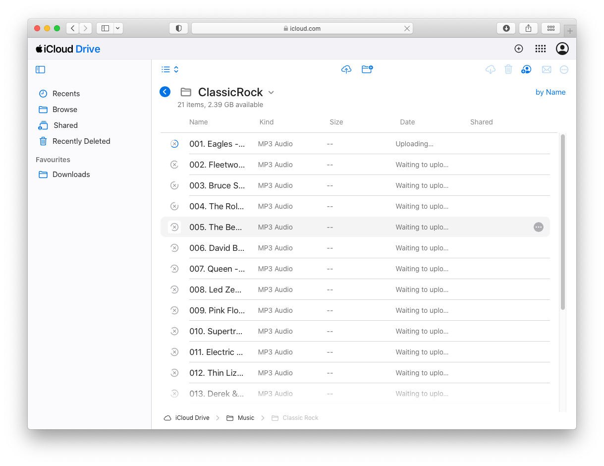
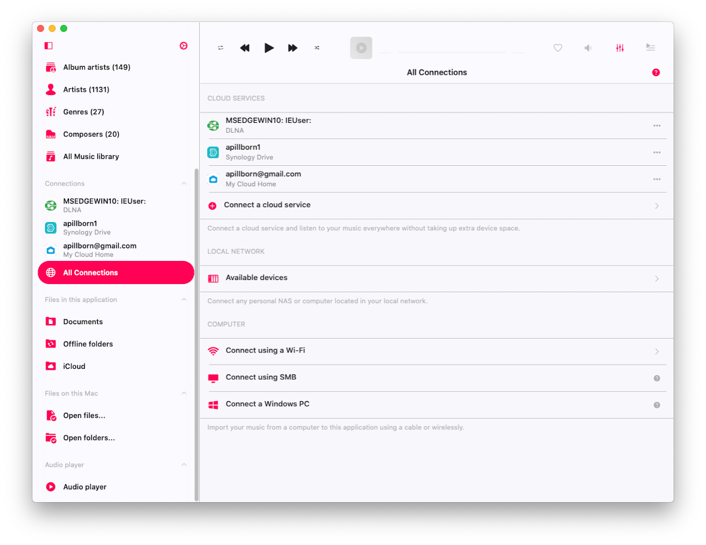
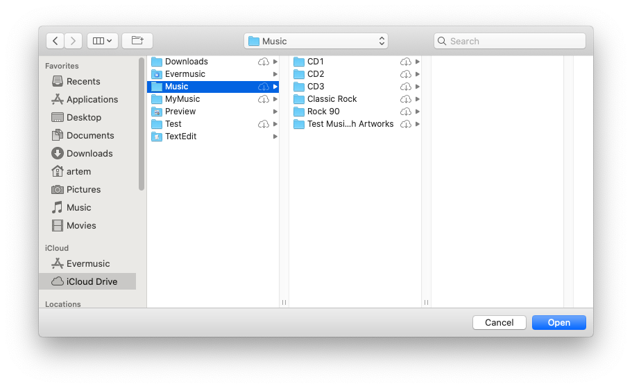
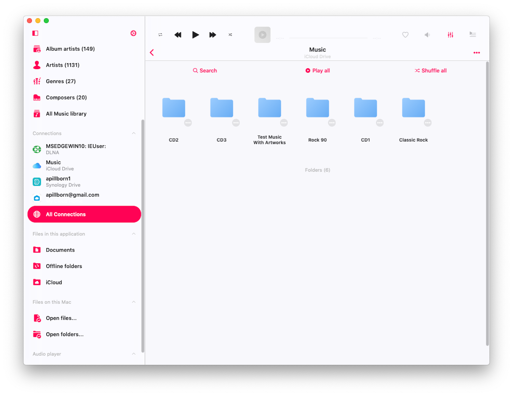
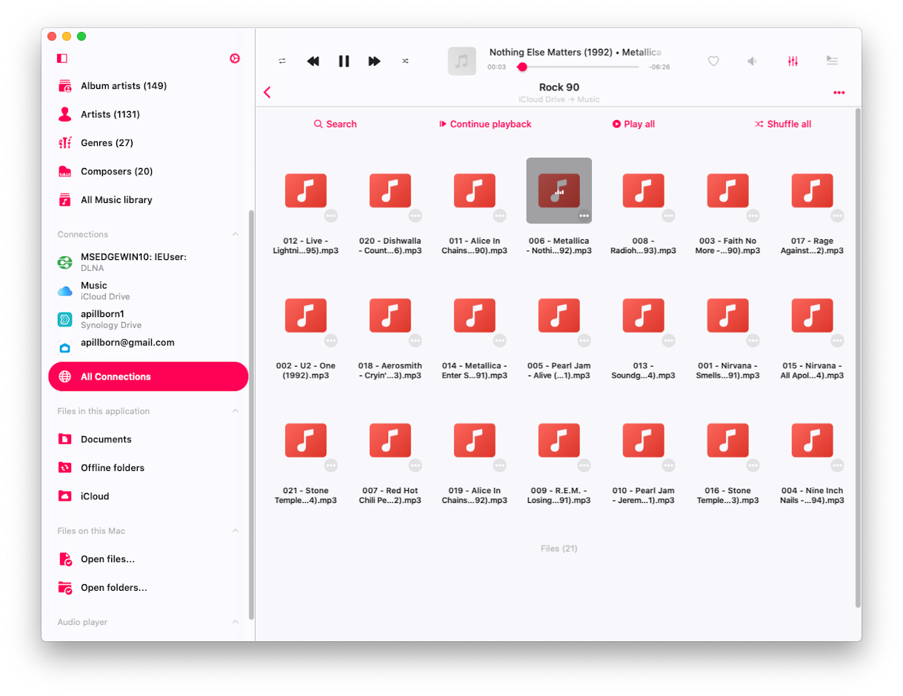
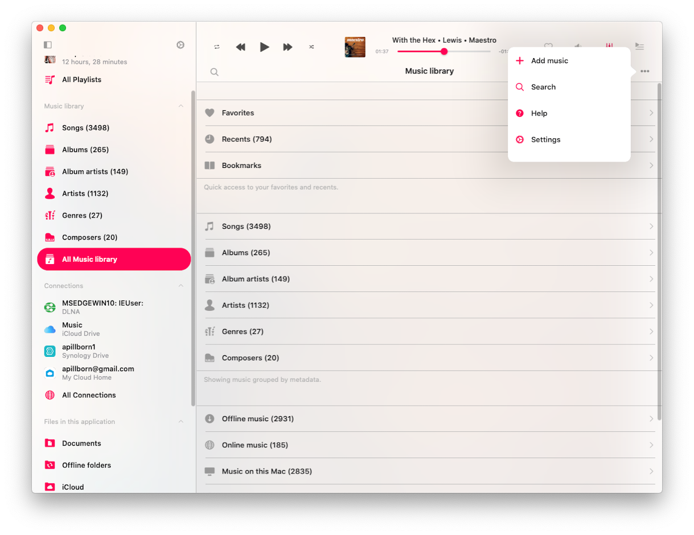
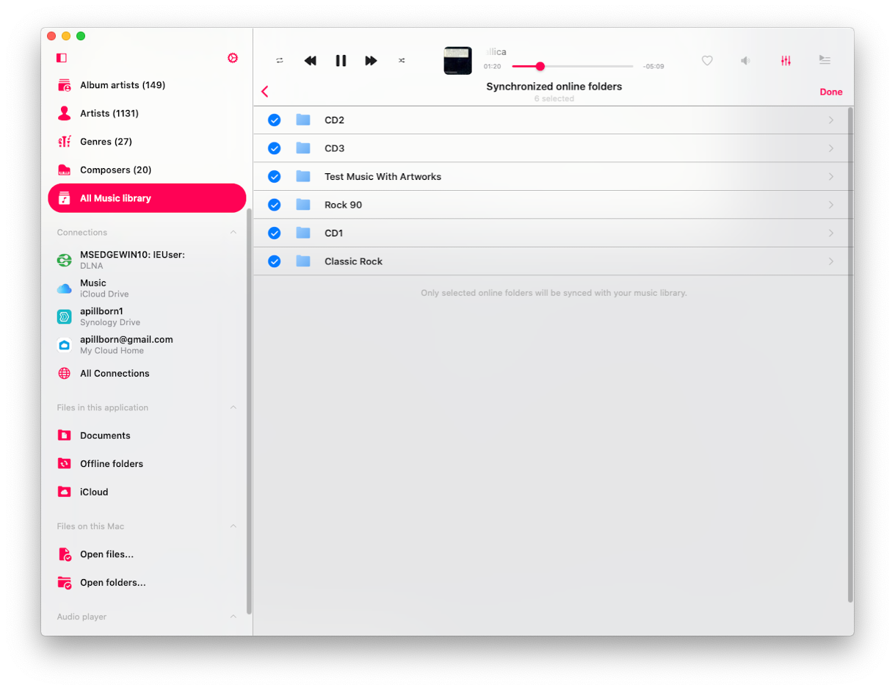
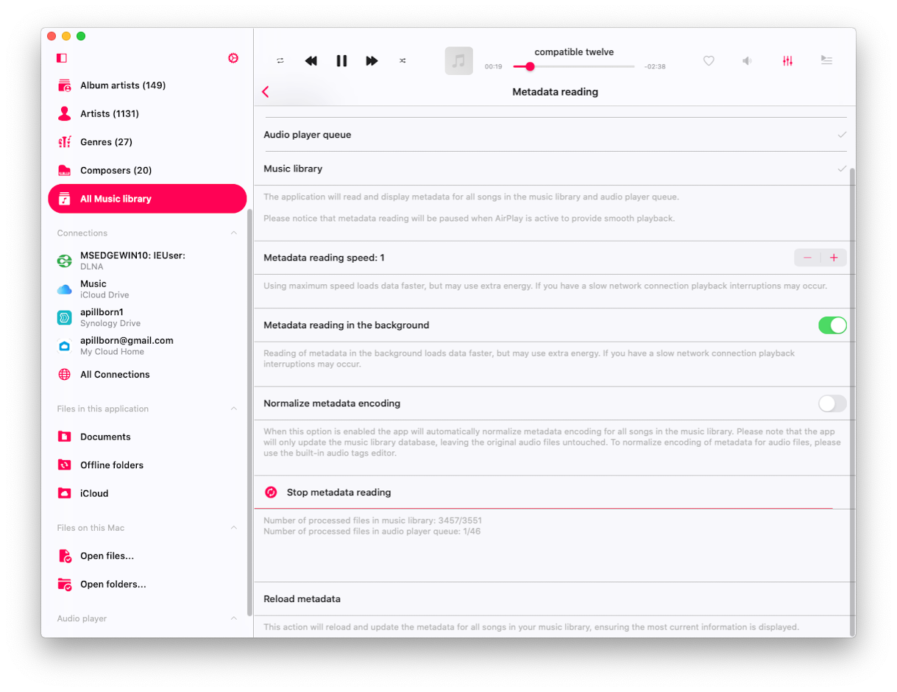
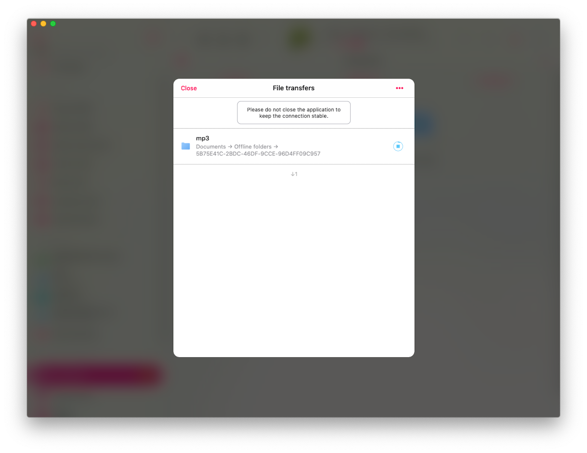
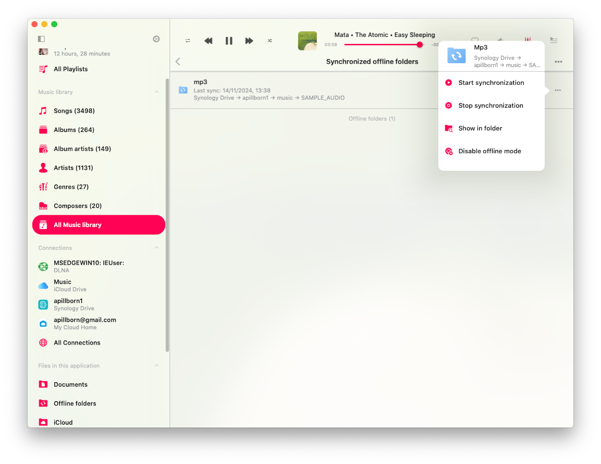

<div id="content-wrapper"><div class="ZL4A4N" data-hook="post-page"><div class=""><div class="" data-hook="slot-placeholder-TPAMultiSection_jvugchim.above-content-1" id="TPAMultiSection_jvugchim.above-content-1"></div></div><div class=""><div class="" data-hook="slot-placeholder-TPAMultiSection_jvugchim.above-content-2" id="TPAMultiSection_jvugchim.above-content-2"></div></div><div class="HcBlwg"><div class="zp8IQu"><div><div class="EcwjNF"><article class="tgMH9T" data-hook="post"><section class="UYw9XC" data-hook="post-hero-image"></section><div class="HW6ttf"><header class="PhCafd"><div class="PKQ95p"><div class="MbPQSQ"><div class="apmiGT" data-hook="post-title"><h1 class="H3vOVf" data-hook="post-title">Step-by-Step Guide: Importing Your iCloud Library into Evermusic and Flacbox</h1></div><div class="a5JqMF"><ul class="NtBDdE"><li class="MABqta"><div class="bZrSjY" style="width:32px;height:32px"><wow-image class="TI1b5D lR3yj5 fluid-avatar-image bok7Ik" data-bg-effect-name="" data-has-ssr-src="" data-image-info='{"displayMode":"fill","targetWidth":32,"targetHeight":32,"isSEOBot":false,"encoding":"AVIF","imageData":{"width":32,"height":32,"uri":"21260c_a693a1db9b5b41199827fb5e97aa89a1%7Emv2.png","name":"","displayMode":"fill"}}' data-motion-part="BG_IMG undefined" style="--wix-img-max-width:max(32px, 100%)"></wow-image></div><a class="IkAhjA" data-hook="profile-link" href="https://www.everappz.com/profile/serviceleshko/profile"><span data-hook="user-name">admin</span></a></li><li class="wBTynn"><span class="time-ago" data-hook="time-ago" title="Nov 14, 2024">Nov 14, 2024</span></li><li class="F56Ope"><span data-hook="time-to-read" title="7 min read">7 min read</span></li></ul><div class="hSZsuG"><button aria-label="More actions" aria-pressed="false" class="MHuRVq" data-hook="more-button" id="more-button-854ebd7f-b18d-48a7-ae7f-32a2b1c408d3" type="button"><svg aria-hidden="true" viewbox="0 0 19 19" width="19" xmlns="http://www.w3.org/2000/svg"><path d="M2.44398805,5.99973295 C1.62345525,5.9690612 0.980075653,5.28418875 1.00047182,4.46312144 C1.02086799,3.64205413 1.69745853,2.98998831 2.51850166,3.0001164 C3.33954478,3.01024449 3.99985313,3.67880182 4,4.50012255 C3.98424812,5.34399206 3.28763905,6.0153508 2.44398805,5.99973295 L2.44398805,5.99973295 Z M2.44398805,10.9997329 C1.62345525,10.9690612 0.980075653,10.2841888 1.00047182,9.46312144 C1.02086799,8.64205413 1.69745853,7.98998831 2.51850166,8.0001164 C3.33954478,8.01024449 3.99985313,8.67880182 4,9.50012255 C3.98424812,10.3439921 3.28763905,11.0153508 2.44398805,10.9997329 L2.44398805,10.9997329 Z M2.44398805,15.9997329 C1.62345525,15.9690612 0.980075653,15.2841888 1.00047182,14.4631214 C1.02086799,13.6420541 1.69745853,12.9899883 2.51850166,13.0001164 C3.33954478,13.0102445 3.99985313,13.6788018 4,14.5001225 C3.98424812,15.3439921 3.28763905,16.0153508 2.44398805,15.9997329 L2.44398805,15.9997329 Z"></path></svg></button></div></div></div><p class="NfKpG_">Updated: <span class="time-ago" data-hook="time-ago" title="Dec 5, 2024">Dec 5, 2024</span></p></div></header><section class="VQDdIN" data-hook="post-description"><div class="moHCnT"><div class="moHCnT"><div class="fTEXDR" data-rce-version="10.134.2"><div class="_8HJdY" data-id="content-viewer" dir="ltr" style="--ricos-text-color:rgb(var(--textParagraphColor-rgb));--ricos-text-color-tuple:var(--textParagraphColor-rgb);--ricos-action-color:rgb(var(--postButtonBackgroundColor));--ricos-action-color-tuple:var(--postButtonBackgroundColor);--ricos-background-color:rgb(var(--postBackgroundColor));--ricos-background-color-tuple:var(--postBackgroundColor);--ricos-fallback-color:rgb(0, 0, 0);--ricos-fallback-color-tuple:0, 0, 0;--ricos-settings-action-color:rgb(0, 0, 0);--ricos-settings-action-color-tuple:0, 0, 0;--ricos-text-on-action-color:rgb(var(--postButtonTextColor));--ricos-text-on-action-color-tuple:var(--postButtonTextColor);--ricos-action-color-fallback:rgb(0, 0, 0);--ricos-action-color-fallback-tuple:0, 0, 0;--ricos-custom-p-font-weight:var(--textParagraphFont-weight);--ricos-custom-p-font-style:var(--textParagraphFont-style);--ricos-custom-p-line-height:max(calc(var(--textParagraphFont-size) * 1.5), var(--textParagraphFont-line-height));--ricos-custom-p-font-size:var(--textParagraphFont-size);--ricos-custom-p-font-family:var(--textParagraphFont-family);--ricos-custom-p-text-decoration:var(--textParagraphFont-text-decoration);--ricos-custom-p-color:rgb(var(--textParagraphColor));--ricos-custom-h1-font-weight:var(--textH1Font-weight);--ricos-custom-h1-font-style:var(--textH1Font-style);--ricos-custom-h1-line-height:var(--textH1Font-line-height);--ricos-custom-h1-font-size:var(--textH1Font-size);--ricos-custom-h1-font-family:var(--textH1Font-family);--ricos-custom-h1-text-decoration:var(--textH1Font-text-decoration);--ricos-custom-h1-color:rgb(var(--textH1Color));--ricos-custom-h2-font-weight:var(--textH2Font-weight);--ricos-custom-h2-font-style:var(--textH2Font-style);--ricos-custom-h2-line-height:var(--textH2Font-line-height);--ricos-custom-h2-font-size:var(--textH2Font-size);--ricos-custom-h2-font-family:var(--textH2Font-family);--ricos-custom-h2-text-decoration:var(--textH2Font-text-decoration);--ricos-custom-h2-color:rgb(var(--textH2Color));--ricos-custom-h3-font-weight:var(--textH3Font-weight);--ricos-custom-h3-font-style:var(--textH3Font-style);--ricos-custom-h3-line-height:var(--textH3Font-line-height);--ricos-custom-h3-font-size:var(--textH3Font-size);--ricos-custom-h3-font-family:var(--textH3Font-family);--ricos-custom-h3-text-decoration:var(--textH3Font-text-decoration);--ricos-custom-h3-color:rgb(var(--textH3Color));--ricos-custom-h4-font-weight:var(--textH4Font-weight);--ricos-custom-h4-font-style:var(--textH4Font-style);--ricos-custom-h4-line-height:var(--textH4Font-line-height);--ricos-custom-h4-font-size:var(--textH4Font-size);--ricos-custom-h4-font-family:var(--textH4Font-family);--ricos-custom-h4-text-decoration:var(--textH4Font-text-decoration);--ricos-custom-h4-color:rgb(var(--textH4Color));--ricos-custom-h5-font-weight:var(--textH5Font-weight);--ricos-custom-h5-font-style:var(--textH5Font-style);--ricos-custom-h5-line-height:var(--textH5Font-line-height);--ricos-custom-h5-font-size:var(--textH5Font-size);--ricos-custom-h5-font-family:var(--textH5Font-family);--ricos-custom-h5-text-decoration:var(--textH5Font-text-decoration);--ricos-custom-h5-color:rgb(var(--textH5Color));--ricos-custom-h6-font-weight:var(--textH6Font-weight);--ricos-custom-h6-font-style:var(--textH6Font-style);--ricos-custom-h6-line-height:var(--textH6Font-line-height);--ricos-custom-h6-font-size:var(--textH6Font-size);--ricos-custom-h6-font-family:var(--textH6Font-family);--ricos-custom-h6-text-decoration:var(--textH6Font-text-decoration);--ricos-custom-h6-color:rgb(var(--textH6Color));--ricos-custom-quote-line-height:var(--textQuoteFont-line-height);--ricos-custom-quote-font-size:var(--textQuoteFont-size);--ricos-custom-quote-font-style:var(--textQuoteFont-style);--ricos-custom-quote-font-family:var(--textQuoteFont-family);--ricos-custom-quote-font-weight:var(--textQuoteFont-weight);--ricos-custom-quote-text-decoration:var(--textQuoteFont-text-decoration);--ricos-custom-quote-color:rgb(var(--textQuoteColor));--ricos-custom-quote-border-color:rgb(var(--textLinksAndHashtagsColor));--ricos-custom-quote-margin-inline-start:var(--ricosQuoteMarginInlineStart);--ricos-custom-code-block-line-height:1.5;--ricos-custom-link-font-style:inherit;--ricos-custom-link-font-weight:inherit;--ricos-custom-link-text-decoration:inherit;--ricos-custom-link-color:rgb(var(--textLinksAndHashtagsColor));--ricos-custom-hashtag-font-style:inherit;--ricos-custom-hashtag-font-weight:inherit;--ricos-custom-hashtag-text-decoration:inherit;--ricos-custom-hashtag-color:rgb(var(--textLinksAndHashtagsColor));--ricos-custom-footer-toolbar-padding-inline-start:var(--ricosFooterPadding);--ricos-custom-footer-toolbar-padding-inline-end:var(--ricosFooterPadding);--ricos-custom-editor-add-plugin-button-position-inline-start:var(--ricosAddPluginButtonStart);--ricos-breakout-normal-padding-start:var(--ricosNormalPadding);--ricos-breakout-normal-padding-end:var(--ricosNormalPadding);--ricos-breakout-full-width-padding-start:var(--ricosFullWidthPadding);--ricos-breakout-full-width-padding-end:var(--ricosFullWidthPadding)"><div class="WZmlO"><div data-hook="rcv-block-first" type="first"></div><div class="Qvle0"><div data-breakout="normal"><div class="_04qQG jtShe _6XZJW UGHSE" dir="auto" id="viewer-z0tso6321" style="padding-top:0px;padding-bottom:0px;line-height:max(0.8em, 2em)"><span class="mVzZr"><br role="presentation"/></span></div></div><div data-hook="rcv-block1" type="empty-line"></div><div data-breakout="normal"><p class="_04qQG jtShe _6XZJW UGHSE" dir="auto" id="viewer-op4zs6473" style="padding-top:0px;padding-bottom:0px;line-height:max(0.8em, 2em)"><span class="mVzZr"><span style="font-size:16px"><span>How to Sync Your iCloud Music Library with Flacbox and Evermusic for Smooth Playback. Recently, one of our subscribers reached out to the Everappz Support Team with a common concern:</span></span></span></p></div><div data-hook="rcv-block2" type="paragraph"></div><div data-breakout="normal"><div dir="ltr" id="viewer-d3xlp552" style="display:flex"><blockquote class="_82sZG" style="padding-top:0px;padding-bottom:0px"><span><div class="_6XZJW UGHSE" dir="auto" id="viewer-algqs553" style="line-height:max(0.8em, 2em)"><span class="mVzZr"><span style="font-size:16px"><span>"Hello Flacbox Support Team,I’ve recently subscribed to Flacbox for one year, but I’m having significant difficulties syncing my music from iCloud properly. I have about 60 albums of various soundtracks stored in my iCloud, which I would like to integrate into the app. However, it seems that the import process into the Flacbox library isn’t working as smoothly as I’d hoped. It takes an extremely long time for even a single album to load into the app. Yesterday, I spent several hours trying different methods to import the albums efficiently, but I couldn’t find a satisfactory solution. I would appreciate any guidance or a step-by-step guide on how to import iCloud-based music (without it being stored locally on my iPhone) in a way that doesn’t result in excessive loading times."</span></span></span></div></span></blockquote></div></div><div data-hook="rcv-block3" type="blockquote"></div><div data-breakout="normal"><div class="_04qQG jtShe _6XZJW UGHSE" dir="auto" id="viewer-o7djk555" style="padding-top:0px;padding-bottom:0px;line-height:max(0.8em, 2em)"><span class="mVzZr"><br role="presentation"/></span></div></div><div data-hook="rcv-block4" type="empty-line"></div><div data-breakout="normal"><p class="_04qQG jtShe _6XZJW UGHSE" dir="auto" id="viewer-wseqx598" style="padding-top:0px;padding-bottom:0px;line-height:max(0.8em, 2em)"><span class="mVzZr"><span style="font-size:16px"><span>For many users with extensive music libraries in iCloud, integrating files into Flacbox and Evermusic can sometimes present challenges, particularly around sync speed and efficiency. If you’ve encountered similar issues, this guide will walk you through best practices to streamline the import process, minimize loading times, and enjoy your music with ease. In this guide we will use iCloud storage but these steps also valid for any other cloud service supported by the app. You'll see Mac screenshots in this guide, but on iPhone, the screens and feature locations are the same. You'll see Mac screenshots in this guide, but on iPhone, the screens and feature locations are the same.</span></span></span></p></div><div data-hook="rcv-block5" type="paragraph"></div><div data-breakout="normal"><div class="_04qQG jtShe _6XZJW UGHSE" dir="auto" id="viewer-72vey593" style="padding-top:0px;padding-bottom:0px;line-height:max(0.8em, 2em)"><span class="mVzZr"><br role="presentation"/></span></div></div><div data-hook="rcv-block6" type="empty-line"></div><div data-breakout="normal"><p class="_04qQG jtShe XCNbA UGHSE" dir="auto" id="viewer-gr3tz557" style="padding-top:0px;padding-bottom:0px;line-height:max(0.8em, 2em)"><span class="mVzZr"><strong style="font-weight:700"><span style="font-size:18px"><span>Step-by-Step Guide: Importing Your iCloud Library into Evermusic and Flacbox</span></span></strong></span></p></div><div data-hook="rcv-block7" type="paragraph"></div><div data-breakout="normal"><div class="_04qQG jtShe XCNbA UGHSE" dir="auto" id="viewer-auexl9260" style="padding-top:0px;padding-bottom:0px;line-height:max(0.8em, 2em)"><span class="mVzZr"><br role="presentation"/></span></div></div><div data-hook="rcv-block8" type="empty-line"></div><div data-breakout="normal"><p class="_04qQG jtShe wGvE1 UGHSE" dir="auto" id="viewer-wmbnh737" style="padding-top:0px;padding-bottom:0px;line-height:max(0.8em, 2em)"><span class="mVzZr"><span style="font-size:16px"><span>Start by opening </span></span><a class="WAzZp aiPD3" data-hook="web-link" href="https://icloud.com" rel="noopener noreferrer" target="_blank"><span style="font-size:16px"><u style="text-decoration:underline"><span>iCloud.com</span></u></span></a><span style="font-size:16px"><span> and creating Music folders to organize your library. Using a computer makes it easy, as the site supports drag-and-drop.</span></span></span></p></div><div data-hook="rcv-block9" type="paragraph"></div><div data-breakout="normal"><div class="_42tfF" id="viewer-3eb456318"><div class="_16CGD T0dxO"><figure class="Z--PZ" data-hook="figure-IMAGE"><div class="_8c85B" data-hook="image-viewer"><div class="zPKNC uh6iL eO1yr" data-hook="image-viewer-3eb456318" id="3eb456318" style="--dim-height:940;--dim-width:1219;--ricos-image-default-border-color:unset"><wow-image class="undefined P6NQu" data-animate-blur="" data-bg-effect-name="" data-has-ssr-src="" data-image-info='{"containerId":"3eb456318","displayMode":"fill","isLQIP":true,"isSEOBot":false,"lqipTransition":"blur","encoding":"AVIF","imageData":{"width":1219,"height":940,"uri":"21260c_141e817570c34e6a8c528b65a99a5ba4~mv2.png","name":"","displayMode":"fill"}}' data-motion-part="BG_IMG" data-transitioned="" id="21260c_141e817570c34e6a8c528b65a99a5ba4~mv2.png"></wow-image></div><button aria-label="Expand image" class="vB0h2" data-hook="image-expand-button" type="button"><svg class="vx8ar" viewbox="0 0 19 19" xmlns="http://www.w3.org/2000/svg"><path d="M15.071 8.371V4.585l-4.355 4.356a.2.2 0 0 1-.283 0l-.374-.374a.2.2 0 0 1 0-.283l4.356-4.355h-3.786a.2.2 0 0 1-.2-.2V3.2c0-.11.09-.2.2-.2H16v5.371a.2.2 0 0 1-.2.2h-.529a.2.2 0 0 1-.2-.2zm-6.5 6.9v.529a.2.2 0 0 1-.2.2H3v-5.371c0-.11.09-.2.2-.2h.529c.11 0 .2.09.2.2v3.786l4.355-4.356a.2.2 0 0 1 .283 0l.374.374a.2.2 0 0 1 0 .283L4.585 15.07h3.786c.11 0 .2.09.2.2z" fill="#000" fill-rule="nonzero"></path></svg></button></div></figure></div></div></div><div data-hook="rcv-block10" type="image"></div><div data-breakout="normal"><p class="_04qQG jtShe wGvE1 UGHSE" dir="auto" id="viewer-q1tg0726" style="padding-top:0px;padding-bottom:0px;line-height:max(0.8em, 2em)"><span class="mVzZr"><span style="font-size:16px"><span>Wait until all files have fully uploaded to iCloud before proceeding.</span></span></span></p></div><div data-hook="rcv-block11" type="paragraph"></div><div data-breakout="normal"><div class="_42tfF" id="viewer-o4eob10264"><div class="_16CGD T0dxO"><figure class="Z--PZ" data-hook="figure-IMAGE"><div class="_8c85B" data-hook="image-viewer"><div class="zPKNC uh6iL eO1yr" data-hook="image-viewer-o4eob10264" id="o4eob10264" style="--dim-height:940;--dim-width:1219;--ricos-image-default-border-color:unset"><wow-image class="undefined P6NQu" data-animate-blur="" data-bg-effect-name="" data-has-ssr-src="" data-image-info='{"containerId":"o4eob10264","displayMode":"fill","isLQIP":true,"isSEOBot":false,"lqipTransition":"blur","encoding":"AVIF","imageData":{"width":1219,"height":940,"uri":"21260c_6f9f363bd64e4ca58190541fcc1ed28e~mv2.png","name":"","displayMode":"fill"}}' data-motion-part="BG_IMG" data-transitioned="" id="21260c_6f9f363bd64e4ca58190541fcc1ed28e~mv2.png"></wow-image></div><button aria-label="Expand image" class="vB0h2" data-hook="image-expand-button" type="button"><svg class="vx8ar" viewbox="0 0 19 19" xmlns="http://www.w3.org/2000/svg"><path d="M15.071 8.371V4.585l-4.355 4.356a.2.2 0 0 1-.283 0l-.374-.374a.2.2 0 0 1 0-.283l4.356-4.355h-3.786a.2.2 0 0 1-.2-.2V3.2c0-.11.09-.2.2-.2H16v5.371a.2.2 0 0 1-.2.2h-.529a.2.2 0 0 1-.2-.2zm-6.5 6.9v.529a.2.2 0 0 1-.2.2H3v-5.371c0-.11.09-.2.2-.2h.529c.11 0 .2.09.2.2v3.786l4.355-4.356a.2.2 0 0 1 .283 0l.374.374a.2.2 0 0 1 0 .283L4.585 15.07h3.786c.11 0 .2.09.2.2z" fill="#000" fill-rule="nonzero"></path></svg></button></div></figure></div></div></div><div data-hook="rcv-block12" type="image"></div><div data-breakout="normal"><p class="_04qQG jtShe _6XZJW UGHSE" dir="auto" id="viewer-8gupe10266" style="padding-top:0px;padding-bottom:0px;line-height:max(0.8em, 2em)"><span class="mVzZr"><span style="font-size:16px"><span>Open the app and navigate to the </span></span><strong style="font-weight:700"><span style="font-size:16px"><span>Connections</span></span></strong><span style="font-size:16px"><span> section.</span></span></span></p></div><div data-hook="rcv-block13" type="paragraph"></div><div data-breakout="normal"><div class="_42tfF" id="viewer-lpb8f12483"><div class="_16CGD T0dxO"><figure class="Z--PZ" data-hook="figure-IMAGE"><div class="_8c85B" data-hook="image-viewer"><div class="zPKNC uh6iL eO1yr" data-hook="image-viewer-lpb8f12483" id="lpb8f12483" style="--dim-height:940;--dim-width:1219;--ricos-image-default-border-color:unset"><wow-image class="undefined P6NQu" data-animate-blur="" data-bg-effect-name="" data-has-ssr-src="" data-image-info='{"containerId":"lpb8f12483","displayMode":"fill","isLQIP":true,"isSEOBot":false,"lqipTransition":"blur","encoding":"AVIF","imageData":{"width":1219,"height":940,"uri":"21260c_ccfbcec8308d4974b630bd1a0868dfd4~mv2.png","name":"","displayMode":"fill"}}' data-motion-part="BG_IMG" id="21260c_ccfbcec8308d4974b630bd1a0868dfd4~mv2.png"></wow-image></div><button aria-label="Expand image" class="vB0h2" data-hook="image-expand-button" type="button"><svg class="vx8ar" viewbox="0 0 19 19" xmlns="http://www.w3.org/2000/svg"><path d="M15.071 8.371V4.585l-4.355 4.356a.2.2 0 0 1-.283 0l-.374-.374a.2.2 0 0 1 0-.283l4.356-4.355h-3.786a.2.2 0 0 1-.2-.2V3.2c0-.11.09-.2.2-.2H16v5.371a.2.2 0 0 1-.2.2h-.529a.2.2 0 0 1-.2-.2zm-6.5 6.9v.529a.2.2 0 0 1-.2.2H3v-5.371c0-.11.09-.2.2-.2h.529c.11 0 .2.09.2.2v3.786l4.355-4.356a.2.2 0 0 1 .283 0l.374.374a.2.2 0 0 1 0 .283L4.585 15.07h3.786c.11 0 .2.09.2.2z" fill="#000" fill-rule="nonzero"></path></svg></button></div></figure></div></div></div><div data-hook="rcv-block14" type="image"></div><div data-breakout="normal"><p class="_04qQG jtShe _6XZJW UGHSE" dir="auto" id="viewer-0czv910790" style="padding-top:0px;padding-bottom:0px;line-height:max(0.8em, 2em)"><span class="mVzZr"><span style="font-size:16px"><span>Tap on </span></span><strong style="font-weight:700"><span style="font-size:16px"><span>Connect a Cloud Service</span></span></strong><span style="font-size:16px"><span> and select </span></span><strong style="font-weight:700"><span style="font-size:16px"><span>iCloud Drive</span></span></strong><span style="font-size:16px"><span> from the list of available cloud servers.</span></span></span></p></div><div data-hook="rcv-block15" type="paragraph"></div><div data-breakout="normal"><div class="_42tfF" id="viewer-x5zqy12720"><div class="_16CGD T0dxO"><figure class="Z--PZ" data-hook="figure-IMAGE"><div class="_8c85B" data-hook="image-viewer"><div class="zPKNC uh6iL eO1yr" data-hook="image-viewer-x5zqy12720" id="x5zqy12720" style="--dim-height:940;--dim-width:1219;--ricos-image-default-border-color:unset"><wow-image class="undefined P6NQu" data-animate-blur="" data-bg-effect-name="" data-has-ssr-src="" data-image-info='{"containerId":"x5zqy12720","displayMode":"fill","isLQIP":true,"isSEOBot":false,"lqipTransition":"blur","encoding":"AVIF","imageData":{"width":1219,"height":940,"uri":"21260c_e0db66985abf49d7833fda296772ddb6~mv2.png","name":"","displayMode":"fill"}}' data-motion-part="BG_IMG" id="21260c_e0db66985abf49d7833fda296772ddb6~mv2.png"></wow-image></div><button aria-label="Expand image" class="vB0h2" data-hook="image-expand-button" type="button"><svg class="vx8ar" viewbox="0 0 19 19" xmlns="http://www.w3.org/2000/svg"><path d="M15.071 8.371V4.585l-4.355 4.356a.2.2 0 0 1-.283 0l-.374-.374a.2.2 0 0 1 0-.283l4.356-4.355h-3.786a.2.2 0 0 1-.2-.2V3.2c0-.11.09-.2.2-.2H16v5.371a.2.2 0 0 1-.2.2h-.529a.2.2 0 0 1-.2-.2zm-6.5 6.9v.529a.2.2 0 0 1-.2.2H3v-5.371c0-.11.09-.2.2-.2h.529c.11 0 .2.09.2.2v3.786l4.355-4.356a.2.2 0 0 1 .283 0l.374.374a.2.2 0 0 1 0 .283L4.585 15.07h3.786c.11 0 .2.09.2.2z" fill="#000" fill-rule="nonzero"></path></svg></button></div></figure></div></div></div><div data-hook="rcv-block16" type="image"></div><div data-breakout="normal"><p class="_04qQG jtShe _6XZJW UGHSE" dir="auto" id="viewer-c8bnv14419" style="padding-top:0px;padding-bottom:0px;line-height:max(0.8em, 2em)"><span class="mVzZr"><span style="font-size:16px"><span>On the next screen tap </span></span><strong style="font-weight:700"><span style="font-size:16px"><span>Select a folder</span></span></strong><span style="font-size:16px"><span> to open system Files picker.</span></span></span></p></div><div data-hook="rcv-block17" type="paragraph"></div><div data-breakout="normal"><div class="_42tfF" id="viewer-yamxb14418"><div class="_16CGD T0dxO"><figure class="Z--PZ" data-hook="figure-IMAGE"><div class="_8c85B" data-hook="image-viewer"><div class="zPKNC uh6iL eO1yr" data-hook="image-viewer-yamxb14418" id="yamxb14418" style="--dim-height:940;--dim-width:1219;--ricos-image-default-border-color:unset"><wow-image class="undefined P6NQu" data-animate-blur="" data-bg-effect-name="" data-has-ssr-src="" data-image-info='{"containerId":"yamxb14418","displayMode":"fill","isLQIP":true,"isSEOBot":false,"lqipTransition":"blur","encoding":"AVIF","imageData":{"width":1219,"height":940,"uri":"21260c_ebeb7ebe890e4a9a876de22fbf445896~mv2.png","name":"","displayMode":"fill"}}' data-motion-part="BG_IMG" id="21260c_ebeb7ebe890e4a9a876de22fbf445896~mv2.png"></wow-image></div><button aria-label="Expand image" class="vB0h2" data-hook="image-expand-button" type="button"><svg class="vx8ar" viewbox="0 0 19 19" xmlns="http://www.w3.org/2000/svg"><path d="M15.071 8.371V4.585l-4.355 4.356a.2.2 0 0 1-.283 0l-.374-.374a.2.2 0 0 1 0-.283l4.356-4.355h-3.786a.2.2 0 0 1-.2-.2V3.2c0-.11.09-.2.2-.2H16v5.371a.2.2 0 0 1-.2.2h-.529a.2.2 0 0 1-.2-.2zm-6.5 6.9v.529a.2.2 0 0 1-.2.2H3v-5.371c0-.11.09-.2.2-.2h.529c.11 0 .2.09.2.2v3.786l4.355-4.356a.2.2 0 0 1 .283 0l.374.374a.2.2 0 0 1 0 .283L4.585 15.07h3.786c.11 0 .2.09.2.2z" fill="#000" fill-rule="nonzero"></path></svg></button></div></figure></div></div></div><div data-hook="rcv-block18" type="image"></div><div data-breakout="normal"><p class="_04qQG jtShe _6XZJW UGHSE" dir="auto" id="viewer-p12cj14460" style="padding-top:0px;padding-bottom:0px;line-height:max(0.8em, 2em)"><span class="mVzZr"><span style="font-size:16px"><span>The key step here is to first select </span></span><strong style="font-weight:700"><span style="font-size:16px"><span>iCloud Drive</span></span></strong><span style="font-size:16px"><span> on the left panel, then navigate to the Music folder created in the previous step, and tap </span></span><strong style="font-weight:700"><span style="font-size:16px"><span>Open</span></span></strong><span style="font-size:16px"><span> to confirm. Note that files in the Music folder show a cloud symbol, indicating they are stored on iCloud servers and not downloaded to your device. This setup allows us to stream music directly from iCloud without downloading it.</span></span></span></p></div><div data-hook="rcv-block19" type="paragraph"></div><div data-breakout="normal"><div class="_42tfF" id="viewer-dxaz414459"><div class="_16CGD T0dxO"><figure class="Z--PZ" data-hook="figure-IMAGE"><div class="_8c85B" data-hook="image-viewer"><div class="zPKNC uh6iL eO1yr" data-hook="image-viewer-dxaz414459" id="dxaz414459" style="--dim-height:560;--dim-width:911;--ricos-image-default-border-color:unset"><wow-image class="undefined P6NQu" data-animate-blur="" data-bg-effect-name="" data-has-ssr-src="" data-image-info='{"containerId":"dxaz414459","displayMode":"fill","isLQIP":true,"isSEOBot":false,"lqipTransition":"blur","encoding":"AVIF","imageData":{"width":911,"height":560,"uri":"21260c_944006734b3f43608c2deb24c56cd9d4~mv2.png","name":"","displayMode":"fill"}}' data-motion-part="BG_IMG" id="21260c_944006734b3f43608c2deb24c56cd9d4~mv2.png"></wow-image></div><button aria-label="Expand image" class="vB0h2" data-hook="image-expand-button" type="button"><svg class="vx8ar" viewbox="0 0 19 19" xmlns="http://www.w3.org/2000/svg"><path d="M15.071 8.371V4.585l-4.355 4.356a.2.2 0 0 1-.283 0l-.374-.374a.2.2 0 0 1 0-.283l4.356-4.355h-3.786a.2.2 0 0 1-.2-.2V3.2c0-.11.09-.2.2-.2H16v5.371a.2.2 0 0 1-.2.2h-.529a.2.2 0 0 1-.2-.2zm-6.5 6.9v.529a.2.2 0 0 1-.2.2H3v-5.371c0-.11.09-.2.2-.2h.529c.11 0 .2.09.2.2v3.786l4.355-4.356a.2.2 0 0 1 .283 0l.374.374a.2.2 0 0 1 0 .283L4.585 15.07h3.786c.11 0 .2.09.2.2z" fill="#000" fill-rule="nonzero"></path></svg></button></div></figure></div></div></div><div data-hook="rcv-block20" type="image"></div><div data-breakout="normal"><p class="_04qQG jtShe _6XZJW UGHSE" dir="auto" id="viewer-97twt14501" style="padding-top:0px;padding-bottom:0px;line-height:max(0.8em, 2em)"><span class="mVzZr"><span style="font-size:16px"><span>After your cloud folder is added to the app, it will appear in the </span></span><strong style="font-weight:700"><span style="font-size:16px"><span>Connections</span></span></strong><span style="font-size:16px"><span> section. Tap on it to view the folder contents and navigate through subfolders and files. Use the options menu to rename, move, or delete files within the connected iCloud Drive folder.</span></span></span></p></div><div data-hook="rcv-block21" type="paragraph"></div><div data-breakout="normal"><div class="_42tfF" id="viewer-1dogf14500"><div class="_16CGD T0dxO"><figure class="Z--PZ" data-hook="figure-IMAGE"><div class="_8c85B" data-hook="image-viewer"><div class="zPKNC uh6iL eO1yr" data-hook="image-viewer-1dogf14500" id="1dogf14500" style="--dim-height:940;--dim-width:1219;--ricos-image-default-border-color:unset"><wow-image class="undefined P6NQu" data-animate-blur="" data-bg-effect-name="" data-has-ssr-src="" data-image-info='{"containerId":"1dogf14500","displayMode":"fill","isLQIP":true,"isSEOBot":false,"lqipTransition":"blur","encoding":"AVIF","imageData":{"width":1219,"height":940,"uri":"21260c_36f1e02d522b4140aa2ecc00e4068387~mv2.png","name":"","displayMode":"fill"}}' data-motion-part="BG_IMG" id="21260c_36f1e02d522b4140aa2ecc00e4068387~mv2.png"></wow-image></div><button aria-label="Expand image" class="vB0h2" data-hook="image-expand-button" type="button"><svg class="vx8ar" viewbox="0 0 19 19" xmlns="http://www.w3.org/2000/svg"><path d="M15.071 8.371V4.585l-4.355 4.356a.2.2 0 0 1-.283 0l-.374-.374a.2.2 0 0 1 0-.283l4.356-4.355h-3.786a.2.2 0 0 1-.2-.2V3.2c0-.11.09-.2.2-.2H16v5.371a.2.2 0 0 1-.2.2h-.529a.2.2 0 0 1-.2-.2zm-6.5 6.9v.529a.2.2 0 0 1-.2.2H3v-5.371c0-.11.09-.2.2-.2h.529c.11 0 .2.09.2.2v3.786l4.355-4.356a.2.2 0 0 1 .283 0l.374.374a.2.2 0 0 1 0 .283L4.585 15.07h3.786c.11 0 .2.09.2.2z" fill="#000" fill-rule="nonzero"></path></svg></button></div></figure></div></div></div><div data-hook="rcv-block22" type="image"></div><div data-breakout="normal"><p class="_04qQG jtShe _6XZJW UGHSE" dir="auto" id="viewer-ippfg14583" style="padding-top:0px;padding-bottom:0px;line-height:max(0.8em, 2em)"><span class="mVzZr"><span style="font-size:16px"><span>To play audio files stored in the cloud, simply tap on any file in the connected cloud folder to launch the audio player. The app will stream the file without downloading it to your device.</span></span></span></p></div><div data-hook="rcv-block23" type="paragraph"></div><div data-breakout="normal"><div class="_42tfF" id="viewer-nxwzd14582"><div class="_16CGD T0dxO"><figure class="Z--PZ" data-hook="figure-IMAGE"><div class="_8c85B" data-hook="image-viewer"><div class="zPKNC uh6iL eO1yr" data-hook="image-viewer-nxwzd14582" id="nxwzd14582" style="--dim-height:940;--dim-width:1219;--ricos-image-default-border-color:unset"><wow-image class="undefined P6NQu" data-animate-blur="" data-bg-effect-name="" data-has-ssr-src="" data-image-info='{"containerId":"nxwzd14582","displayMode":"fill","isLQIP":true,"isSEOBot":false,"lqipTransition":"blur","encoding":"AVIF","imageData":{"width":1219,"height":940,"uri":"21260c_27d2d6ec37c648fdb7e84e82d52eb38b~mv2.png","name":"","displayMode":"fill"}}' data-motion-part="BG_IMG" id="21260c_27d2d6ec37c648fdb7e84e82d52eb38b~mv2.png"></wow-image></div><button aria-label="Expand image" class="vB0h2" data-hook="image-expand-button" type="button"><svg class="vx8ar" viewbox="0 0 19 19" xmlns="http://www.w3.org/2000/svg"><path d="M15.071 8.371V4.585l-4.355 4.356a.2.2 0 0 1-.283 0l-.374-.374a.2.2 0 0 1 0-.283l4.356-4.355h-3.786a.2.2 0 0 1-.2-.2V3.2c0-.11.09-.2.2-.2H16v5.371a.2.2 0 0 1-.2.2h-.529a.2.2 0 0 1-.2-.2zm-6.5 6.9v.529a.2.2 0 0 1-.2.2H3v-5.371c0-.11.09-.2.2-.2h.529c.11 0 .2.09.2.2v3.786l4.355-4.356a.2.2 0 0 1 .283 0l.374.374a.2.2 0 0 1 0 .283L4.585 15.07h3.786c.11 0 .2.09.2.2z" fill="#000" fill-rule="nonzero"></path></svg></button></div></figure></div></div></div><div data-hook="rcv-block24" type="image"></div><div data-breakout="normal"><p class="_04qQG jtShe _6XZJW UGHSE" dir="auto" id="viewer-djlzr14624" style="padding-top:0px;padding-bottom:0px;line-height:max(0.8em, 2em)"><span class="mVzZr"><span style="font-size:16px"><span>If you want to add files to the Music library and organize tracks by Artist, Album, or Genre tags, open the </span></span><strong style="font-weight:700"><span style="font-size:16px"><span>Music library</span></span></strong><span style="font-size:16px"><span> screen. Tap the </span></span><strong style="font-weight:700"><span style="font-size:16px"><span>More actions</span></span></strong><span style="font-size:16px"><span> button in the top-right corner and select </span></span><strong style="font-weight:700"><span style="font-size:16px"><span>Settings</span></span></strong><span style="font-size:16px"><span> to access the Music library settings.</span></span></span></p></div><div data-hook="rcv-block25" type="paragraph"></div><div data-breakout="normal"><div class="_42tfF" id="viewer-5nhnz51801"><div class="_16CGD T0dxO"><figure class="Z--PZ" data-hook="figure-IMAGE"><div class="_8c85B" data-hook="image-viewer"><div class="zPKNC uh6iL eO1yr" data-hook="image-viewer-5nhnz51801" id="5nhnz51801" style="--dim-height:940;--dim-width:1219;--ricos-image-default-border-color:unset"><wow-image class="undefined P6NQu" data-animate-blur="" data-bg-effect-name="" data-has-ssr-src="" data-image-info='{"containerId":"5nhnz51801","displayMode":"fill","isLQIP":true,"isSEOBot":false,"lqipTransition":"blur","encoding":"AVIF","imageData":{"width":1219,"height":940,"uri":"21260c_cb6d59b3af5e466f9875f67199c5df94~mv2.png","name":"","displayMode":"fill"}}' data-motion-part="BG_IMG" id="21260c_cb6d59b3af5e466f9875f67199c5df94~mv2.png"></wow-image></div><button aria-label="Expand image" class="vB0h2" data-hook="image-expand-button" type="button"><svg class="vx8ar" viewbox="0 0 19 19" xmlns="http://www.w3.org/2000/svg"><path d="M15.071 8.371V4.585l-4.355 4.356a.2.2 0 0 1-.283 0l-.374-.374a.2.2 0 0 1 0-.283l4.356-4.355h-3.786a.2.2 0 0 1-.2-.2V3.2c0-.11.09-.2.2-.2H16v5.371a.2.2 0 0 1-.2.2h-.529a.2.2 0 0 1-.2-.2zm-6.5 6.9v.529a.2.2 0 0 1-.2.2H3v-5.371c0-.11.09-.2.2-.2h.529c.11 0 .2.09.2.2v3.786l4.355-4.356a.2.2 0 0 1 .283 0l.374.374a.2.2 0 0 1 0 .283L4.585 15.07h3.786c.11 0 .2.09.2.2z" fill="#000" fill-rule="nonzero"></path></svg></button></div></figure></div></div></div><div data-hook="rcv-block26" type="image"></div><div data-breakout="normal"><p class="_04qQG jtShe _6XZJW UGHSE" dir="auto" id="viewer-qgbzf14665" style="padding-top:0px;padding-bottom:0px;line-height:max(0.8em, 2em)"><span class="mVzZr"><span style="font-size:16px"><span>In the Music library settings screen, several options are available. For now, focus on </span></span><strong style="font-weight:700"><span style="font-size:16px"><span>Online Music Synchronization</span></span></strong><span style="font-size:16px"><span>.</span></span></span></p></div><div data-hook="rcv-block27" type="paragraph"></div><div data-breakout="normal"><div class="_04qQG jtShe _6XZJW UGHSE" dir="auto" id="viewer-02ahg399581" style="padding-top:0px;padding-bottom:0px;line-height:max(0.8em, 2em)"><span class="mVzZr"><br role="presentation"/></span></div></div><div data-hook="rcv-block28" type="empty-line"></div><div data-breakout="normal"><p class="_04qQG jtShe XCNbA UGHSE" dir="auto" id="viewer-ssf4n399717" style="padding-top:0px;padding-bottom:0px;line-height:max(0.8em, 2em)"><span class="mVzZr"><strong style="font-weight:700"><span style="font-size:18px"><span>Online Music Synchronization</span></span></strong></span></p></div><div data-hook="rcv-block29" type="paragraph"></div><div data-breakout="normal"><div class="_04qQG jtShe XCNbA UGHSE" dir="auto" id="viewer-44kpx400942" style="padding-top:0px;padding-bottom:0px;line-height:max(0.8em, 2em)"><span class="mVzZr"><br role="presentation"/></span></div></div><div data-hook="rcv-block30" type="empty-line"></div><div data-breakout="normal"><div class="_42tfF" id="viewer-xzole14664"><div class="_16CGD T0dxO"><figure class="Z--PZ" data-hook="figure-IMAGE"><div class="_8c85B" data-hook="image-viewer"><div class="zPKNC uh6iL eO1yr" data-hook="image-viewer-xzole14664" id="xzole14664" style="--dim-height:940;--dim-width:1219;--ricos-image-default-border-color:unset"><wow-image class="undefined P6NQu" data-animate-blur="" data-bg-effect-name="" data-has-ssr-src="" data-image-info='{"containerId":"xzole14664","displayMode":"fill","isLQIP":true,"isSEOBot":false,"lqipTransition":"blur","encoding":"AVIF","imageData":{"width":1219,"height":940,"uri":"21260c_cc7a80af9d394d57979549b0a5b9c91d~mv2.png","name":"","displayMode":"fill"}}' data-motion-part="BG_IMG" id="21260c_cc7a80af9d394d57979549b0a5b9c91d~mv2.png"></wow-image></div><button aria-label="Expand image" class="vB0h2" data-hook="image-expand-button" type="button"><svg class="vx8ar" viewbox="0 0 19 19" xmlns="http://www.w3.org/2000/svg"><path d="M15.071 8.371V4.585l-4.355 4.356a.2.2 0 0 1-.283 0l-.374-.374a.2.2 0 0 1 0-.283l4.356-4.355h-3.786a.2.2 0 0 1-.2-.2V3.2c0-.11.09-.2.2-.2H16v5.371a.2.2 0 0 1-.2.2h-.529a.2.2 0 0 1-.2-.2zm-6.5 6.9v.529a.2.2 0 0 1-.2.2H3v-5.371c0-.11.09-.2.2-.2h.529c.11 0 .2.09.2.2v3.786l4.355-4.356a.2.2 0 0 1 .283 0l.374.374a.2.2 0 0 1 0 .283L4.585 15.07h3.786c.11 0 .2.09.2.2z" fill="#000" fill-rule="nonzero"></path></svg></button></div></figure></div></div></div><div data-hook="rcv-block31" type="image"></div><div data-breakout="normal"><p class="_04qQG jtShe _6XZJW UGHSE" dir="auto" id="viewer-6kiuv14706" style="padding-top:0px;padding-bottom:0px;line-height:max(0.8em, 2em)"><span class="mVzZr"><span style="font-size:16px"><span>Tap on </span></span><strong style="font-weight:700"><span style="font-size:16px"><span>Online Music Synchronization</span></span></strong><span style="font-size:16px"><span> to proceed to the next screen. First, activate this feature. On iPhone, you also have the option to choose the network type for synchronization: </span></span><strong style="font-weight:700"><span style="font-size:16px"><span>Wi-Fi</span></span></strong><span style="font-size:16px"><span> only or </span></span><strong style="font-weight:700"><span style="font-size:16px"><span>Wi-Fi and cellular data</span></span></strong><span style="font-size:16px"><span>.</span></span></span></p></div><div data-hook="rcv-block32" type="paragraph"></div><div data-breakout="normal"><div class="_42tfF" id="viewer-gug7n14705"><div class="_16CGD T0dxO"><figure class="Z--PZ" data-hook="figure-IMAGE"><div class="_8c85B" data-hook="image-viewer"><div class="zPKNC uh6iL eO1yr" data-hook="image-viewer-gug7n14705" id="gug7n14705" style="--dim-height:940;--dim-width:1219;--ricos-image-default-border-color:unset"><wow-image class="undefined P6NQu" data-animate-blur="" data-bg-effect-name="" data-has-ssr-src="" data-image-info='{"containerId":"gug7n14705","displayMode":"fill","isLQIP":true,"isSEOBot":false,"lqipTransition":"blur","encoding":"AVIF","imageData":{"width":1219,"height":940,"uri":"21260c_a5dbaba46cf94db39cea44d0ab0a32e8~mv2.png","name":"","displayMode":"fill"}}' data-motion-part="BG_IMG" id="21260c_a5dbaba46cf94db39cea44d0ab0a32e8~mv2.png"></wow-image></div><button aria-label="Expand image" class="vB0h2" data-hook="image-expand-button" type="button"><svg class="vx8ar" viewbox="0 0 19 19" xmlns="http://www.w3.org/2000/svg"><path d="M15.071 8.371V4.585l-4.355 4.356a.2.2 0 0 1-.283 0l-.374-.374a.2.2 0 0 1 0-.283l4.356-4.355h-3.786a.2.2 0 0 1-.2-.2V3.2c0-.11.09-.2.2-.2H16v5.371a.2.2 0 0 1-.2.2h-.529a.2.2 0 0 1-.2-.2zm-6.5 6.9v.529a.2.2 0 0 1-.2.2H3v-5.371c0-.11.09-.2.2-.2h.529c.11 0 .2.09.2.2v3.786l4.355-4.356a.2.2 0 0 1 .283 0l.374.374a.2.2 0 0 1 0 .283L4.585 15.07h3.786c.11 0 .2.09.2.2z" fill="#000" fill-rule="nonzero"></path></svg></button></div></figure></div></div></div><div data-hook="rcv-block33" type="image"></div><div data-breakout="normal"><p class="_04qQG jtShe _6XZJW UGHSE" dir="auto" id="viewer-8on4p14747" style="padding-top:0px;padding-bottom:0px;line-height:max(0.8em, 2em)"><span class="mVzZr"><span style="font-size:16px"><span>Tap </span></span><strong style="font-weight:700"><span style="font-size:16px"><span>Synchronized online folders</span></span></strong><span style="font-size:16px"><span> to start folders selection. When you select folder the app will scan folder content and all finded audio files will appear in the </span></span><strong style="font-weight:700"><span style="font-size:16px"><span>Music library</span></span></strong><span style="font-size:16px"><span>. The app creates only links to your media files located in a cloud server. </span></span></span></p></div><div data-hook="rcv-block34" type="paragraph"></div><div data-breakout="normal"><div class="_42tfF" id="viewer-6hgn614951"><div class="_16CGD T0dxO"><figure class="Z--PZ" data-hook="figure-IMAGE"><div class="_8c85B" data-hook="image-viewer"><div class="zPKNC uh6iL eO1yr" data-hook="image-viewer-6hgn614951" id="6hgn614951" style="--dim-height:940;--dim-width:1219;--ricos-image-default-border-color:unset"><wow-image class="undefined P6NQu" data-animate-blur="" data-bg-effect-name="" data-has-ssr-src="" data-image-info='{"containerId":"6hgn614951","displayMode":"fill","isLQIP":true,"isSEOBot":false,"lqipTransition":"blur","encoding":"AVIF","imageData":{"width":1219,"height":940,"uri":"21260c_c5e098f807574914a650ac637bad3b45~mv2.png","name":"","displayMode":"fill"}}' data-motion-part="BG_IMG" id="21260c_c5e098f807574914a650ac637bad3b45~mv2.png"></wow-image></div><button aria-label="Expand image" class="vB0h2" data-hook="image-expand-button" type="button"><svg class="vx8ar" viewbox="0 0 19 19" xmlns="http://www.w3.org/2000/svg"><path d="M15.071 8.371V4.585l-4.355 4.356a.2.2 0 0 1-.283 0l-.374-.374a.2.2 0 0 1 0-.283l4.356-4.355h-3.786a.2.2 0 0 1-.2-.2V3.2c0-.11.09-.2.2-.2H16v5.371a.2.2 0 0 1-.2.2h-.529a.2.2 0 0 1-.2-.2zm-6.5 6.9v.529a.2.2 0 0 1-.2.2H3v-5.371c0-.11.09-.2.2-.2h.529c.11 0 .2.09.2.2v3.786l4.355-4.356a.2.2 0 0 1 .283 0l.374.374a.2.2 0 0 1 0 .283L4.585 15.07h3.786c.11 0 .2.09.2.2z" fill="#000" fill-rule="nonzero"></path></svg></button></div></figure></div></div></div><div data-hook="rcv-block35" type="image"></div><div data-breakout="normal"><p class="_04qQG jtShe _6XZJW UGHSE" dir="auto" id="viewer-bd4mk86947" style="padding-top:0px;padding-bottom:0px;line-height:max(0.8em, 2em)"><span class="mVzZr"><span style="font-size:16px"><span>For now, tap on the connected iCloud server and select the music folders. Tap </span></span><strong style="font-weight:700"><span style="font-size:16px"><span>Done</span></span></strong><span style="font-size:16px"><span> to confirm your selection.</span></span></span></p></div><div data-hook="rcv-block36" type="paragraph"></div><div data-breakout="normal"><div class="_42tfF" id="viewer-uiv1b14910"><div class="_16CGD T0dxO"><figure class="Z--PZ" data-hook="figure-IMAGE"><div class="_8c85B" data-hook="image-viewer"><div class="zPKNC uh6iL eO1yr" data-hook="image-viewer-uiv1b14910" id="uiv1b14910" style="--dim-height:940;--dim-width:1219;--ricos-image-default-border-color:unset"><wow-image class="undefined P6NQu" data-animate-blur="" data-bg-effect-name="" data-has-ssr-src="" data-image-info='{"containerId":"uiv1b14910","displayMode":"fill","isLQIP":true,"isSEOBot":false,"lqipTransition":"blur","encoding":"AVIF","imageData":{"width":1219,"height":940,"uri":"21260c_dc162bbb32764b359da4789fdb98294d~mv2.png","name":"","displayMode":"fill"}}' data-motion-part="BG_IMG" id="21260c_dc162bbb32764b359da4789fdb98294d~mv2.png"></wow-image></div><button aria-label="Expand image" class="vB0h2" data-hook="image-expand-button" type="button"><svg class="vx8ar" viewbox="0 0 19 19" xmlns="http://www.w3.org/2000/svg"><path d="M15.071 8.371V4.585l-4.355 4.356a.2.2 0 0 1-.283 0l-.374-.374a.2.2 0 0 1 0-.283l4.356-4.355h-3.786a.2.2 0 0 1-.2-.2V3.2c0-.11.09-.2.2-.2H16v5.371a.2.2 0 0 1-.2.2h-.529a.2.2 0 0 1-.2-.2zm-6.5 6.9v.529a.2.2 0 0 1-.2.2H3v-5.371c0-.11.09-.2.2-.2h.529c.11 0 .2.09.2.2v3.786l4.355-4.356a.2.2 0 0 1 .283 0l.374.374a.2.2 0 0 1 0 .283L4.585 15.07h3.786c.11 0 .2.09.2.2z" fill="#000" fill-rule="nonzero"></path></svg></button></div></figure></div></div></div><div data-hook="rcv-block37" type="image"></div><div data-breakout="normal"><p class="_04qQG jtShe _6XZJW UGHSE" dir="auto" id="viewer-w0pmj87055" style="padding-top:0px;padding-bottom:0px;line-height:max(0.8em, 2em)"><span class="mVzZr"><span style="font-size:16px"><span>The app will begin scanning your selected folders, and all found files will appear in your music library. You can also set a time interval to control how often the app scans for updates on your cloud server.</span></span></span></p></div><div data-hook="rcv-block38" type="paragraph"></div><div data-breakout="normal"><div class="_04qQG jtShe _6XZJW UGHSE" dir="auto" id="viewer-168dy162080" style="padding-top:0px;padding-bottom:0px;line-height:max(0.8em, 2em)"><span class="mVzZr"><br role="presentation"/></span></div></div><div data-hook="rcv-block39" type="empty-line"></div><div data-breakout="normal"><p class="_04qQG jtShe _6XZJW UGHSE" dir="auto" id="viewer-bulz2162081" style="padding-top:0px;padding-bottom:0px;line-height:max(0.8em, 2em)"><span class="mVzZr"><span style="font-size:16px"><span>With </span></span><strong style="font-weight:700"><span style="font-size:16px"><span>Background Synchronization enabled</span></span></strong><span style="font-size:16px"><span>, the app continues scanning even when running in the background. We recommend enabling this feature to speed up the process; however, keep in mind that if the app consumes too much energy in the background, iOS may close it.</span></span></span></p></div><div data-hook="rcv-block40" type="paragraph"></div><div data-breakout="normal"><div class="_04qQG jtShe _6XZJW UGHSE" dir="auto" id="viewer-o5xhu162083" style="padding-top:0px;padding-bottom:0px;line-height:max(0.8em, 2em)"><span class="mVzZr"><br role="presentation"/></span></div></div><div data-hook="rcv-block41" type="empty-line"></div><div data-breakout="normal"><p class="_04qQG jtShe _6XZJW UGHSE" dir="auto" id="viewer-lc0sk162084" style="padding-top:0px;padding-bottom:0px;line-height:max(0.8em, 2em)"><span class="mVzZr"><span style="font-size:16px"><span>For faster scanning, enable Background Synchronization and start audio playback, as playing audio in the background prevents the iOS/macOS system from unloading the app. Alternatively, you can keep the app open during the synchronization process.</span></span></span></p></div><div data-hook="rcv-block42" type="paragraph"></div><div data-breakout="normal"><div class="_04qQG jtShe _6XZJW UGHSE" dir="auto" id="viewer-4erpn162086" style="padding-top:0px;padding-bottom:0px;line-height:max(0.8em, 2em)"><span class="mVzZr"><br role="presentation"/></span></div></div><div data-hook="rcv-block43" type="empty-line"></div><div data-breakout="normal"><p class="_04qQG jtShe _6XZJW UGHSE" dir="auto" id="viewer-1kn52162087" style="padding-top:0px;padding-bottom:0px;line-height:max(0.8em, 2em)"><span class="mVzZr"><span style="font-size:16px"><span>Tap </span></span><strong style="font-weight:700"><span style="font-size:16px"><span>Start Synchronization</span></span></strong><span style="font-size:16px"><span> to begin and view sync progress at the bottom of this screen.</span></span></span></p></div><div data-hook="rcv-block44" type="paragraph"></div><div data-breakout="normal"><div class="_04qQG jtShe _6XZJW UGHSE" dir="auto" id="viewer-1s8fe162151" style="padding-top:0px;padding-bottom:0px;line-height:max(0.8em, 2em)"><span class="mVzZr"><br role="presentation"/></span></div></div><div data-hook="rcv-block45" type="empty-line"></div><div data-breakout="normal"><p class="_04qQG jtShe _6XZJW UGHSE" dir="auto" id="viewer-ef1kb162214" style="padding-top:0px;padding-bottom:0px;line-height:max(0.8em, 2em)"><span class="mVzZr"><span style="font-size:16px"><span>That's all for online sync; let's move forward.</span></span></span></p></div><div data-hook="rcv-block46" type="paragraph"></div><div data-breakout="normal"><div class="_04qQG jtShe _6XZJW UGHSE" dir="auto" id="viewer-82m0p185159" style="padding-top:0px;padding-bottom:0px;line-height:max(0.8em, 2em)"><span class="mVzZr"><br role="presentation"/></span></div></div><div data-hook="rcv-block47" type="empty-line"></div><div data-breakout="normal"><p class="_04qQG jtShe XCNbA UGHSE" dir="auto" id="viewer-8czv7185227" style="padding-top:0px;padding-bottom:0px;line-height:max(0.8em, 2em)"><span class="mVzZr"><strong style="font-weight:700"><span style="font-size:18px"><span>Metadata reading</span></span></strong></span></p></div><div data-hook="rcv-block48" type="paragraph"></div><div data-breakout="normal"><div class="_04qQG jtShe XCNbA UGHSE" dir="auto" id="viewer-rs3g8399199" style="padding-top:0px;padding-bottom:0px;line-height:max(0.8em, 2em)"><span class="mVzZr"><br role="presentation"/></span></div></div><div data-hook="rcv-block49" type="empty-line"></div><div data-breakout="normal"><p class="_04qQG jtShe _6XZJW UGHSE" dir="auto" id="viewer-bawm4185089" style="padding-top:0px;padding-bottom:0px;line-height:max(0.8em, 2em)"><span class="mVzZr"><span style="font-size:16px"><span>Another important process is metadata sync. This process loads metadata for tracks added to the music library, allowing the app to group them by artist, album, and genre using data from metadata tags. </span></span></span></p></div><div data-hook="rcv-block50" type="paragraph"></div><div data-breakout="normal"><div class="_04qQG jtShe _6XZJW UGHSE" dir="auto" id="viewer-lv4np185091" style="padding-top:0px;padding-bottom:0px;line-height:max(0.8em, 2em)"><span class="mVzZr"><br role="presentation"/></span></div></div><div data-hook="rcv-block51" type="empty-line"></div><div data-breakout="normal"><p class="_04qQG jtShe _6XZJW UGHSE" dir="auto" id="viewer-0ydsq185092" style="padding-top:0px;padding-bottom:0px;line-height:max(0.8em, 2em)"><span class="mVzZr"><span style="font-size:16px"><span>To configure this, go to the </span></span><strong style="font-weight:700"><span style="font-size:16px"><span>Music Library settings</span></span></strong><span style="font-size:16px"><span> screen and tap </span></span><strong style="font-weight:700"><span style="font-size:16px"><span>Metadata Reading</span></span></strong><span style="font-size:16px"><span> to update the settings. </span></span></span></p></div><div data-hook="rcv-block52" type="paragraph"></div><div data-breakout="normal"><div class="_42tfF" id="viewer-7gzr014746"><div class="_16CGD T0dxO"><figure class="Z--PZ" data-hook="figure-IMAGE"><div class="_8c85B" data-hook="image-viewer"><div class="zPKNC uh6iL eO1yr" data-hook="image-viewer-7gzr014746" id="7gzr014746" style="--dim-height:940;--dim-width:1219;--ricos-image-default-border-color:unset"><wow-image class="undefined P6NQu" data-animate-blur="" data-bg-effect-name="" data-has-ssr-src="" data-image-info='{"containerId":"7gzr014746","displayMode":"fill","isLQIP":true,"isSEOBot":false,"lqipTransition":"blur","encoding":"AVIF","imageData":{"width":1219,"height":940,"uri":"21260c_a74acfe948934fa48913bfcd8450b3ab~mv2.png","name":"","displayMode":"fill"}}' data-motion-part="BG_IMG" id="21260c_a74acfe948934fa48913bfcd8450b3ab~mv2.png"></wow-image></div><button aria-label="Expand image" class="vB0h2" data-hook="image-expand-button" type="button"><svg class="vx8ar" viewbox="0 0 19 19" xmlns="http://www.w3.org/2000/svg"><path d="M15.071 8.371V4.585l-4.355 4.356a.2.2 0 0 1-.283 0l-.374-.374a.2.2 0 0 1 0-.283l4.356-4.355h-3.786a.2.2 0 0 1-.2-.2V3.2c0-.11.09-.2.2-.2H16v5.371a.2.2 0 0 1-.2.2h-.529a.2.2 0 0 1-.2-.2zm-6.5 6.9v.529a.2.2 0 0 1-.2.2H3v-5.371c0-.11.09-.2.2-.2h.529c.11 0 .2.09.2.2v3.786l4.355-4.356a.2.2 0 0 1 .283 0l.374.374a.2.2 0 0 1 0 .283L4.585 15.07h3.786c.11 0 .2.09.2.2z" fill="#000" fill-rule="nonzero"></path></svg></button></div></figure></div></div></div><div data-hook="rcv-block53" type="image"></div><div data-breakout="normal"><p class="_04qQG jtShe _6XZJW UGHSE" dir="auto" id="viewer-xp02t124287" style="padding-top:0px;padding-bottom:0px;line-height:max(0.8em, 2em)"><span class="mVzZr"><strong style="font-weight:700"><span style="font-size:16px"><span>Available Modes for Metadata Reader:</span></span></strong></span></p></div><div data-hook="rcv-block54" type="paragraph"></div><div data-breakout="normal"><p class="_04qQG jtShe _6XZJW UGHSE" dir="auto" id="viewer-l07q0244225" style="padding-top:0px;padding-bottom:0px;line-height:max(0.8em, 2em)"><span class="mVzZr"><strong style="font-weight:700"><span style="font-size:16px"><span>Deactivated</span></span></strong><span style="font-size:16px"><span>: The metadata reader will be deactivated, and file names will be shown instead of data from audio tags.</span></span></span></p></div><div data-hook="rcv-block55" type="paragraph"></div><div data-breakout="normal"><p class="_04qQG jtShe _6XZJW UGHSE" dir="auto" id="viewer-abgy2244228" style="padding-top:0px;padding-bottom:0px;line-height:max(0.8em, 2em)"><span class="mVzZr"><strong style="font-weight:700"><span style="font-size:16px"><span>Current Song</span></span></strong><span style="font-size:16px"><span>: The application will read metadata only for the currently playing song. Use this option if you have a slow network connection to prevent the metadata reader from sending many requests to the cloud server, which may cause playback interruptions.</span></span></span></p></div><div data-hook="rcv-block56" type="paragraph"></div><div data-breakout="normal"><p class="_04qQG jtShe _6XZJW UGHSE" dir="auto" id="viewer-p1quo244231" style="padding-top:0px;padding-bottom:0px;line-height:max(0.8em, 2em)"><span class="mVzZr"><strong style="font-weight:700"><span style="font-size:16px"><span>Audio Player Queue</span></span></strong><span style="font-size:16px"><span>: The app will read metadata for all songs in the audio player queue.</span></span></span></p></div><div data-hook="rcv-block57" type="paragraph"></div><div data-breakout="normal"><p class="_04qQG jtShe _6XZJW UGHSE" dir="auto" id="viewer-bh5mr244234" style="padding-top:0px;padding-bottom:0px;line-height:max(0.8em, 2em)"><span class="mVzZr"><strong style="font-weight:700"><span style="font-size:16px"><span>Music Library</span></span></strong><span style="font-size:16px"><span>: The app will read metadata for all songs in the music library.</span></span></span></p></div><div data-hook="rcv-block58" type="paragraph"></div><div data-breakout="normal"><div class="_04qQG jtShe _6XZJW UGHSE" dir="auto" id="viewer-milb7244236" style="padding-top:0px;padding-bottom:0px;line-height:max(0.8em, 2em)"><span class="mVzZr"><br role="presentation"/></span></div></div><div data-hook="rcv-block59" type="empty-line"></div><div data-breakout="normal"><p class="_04qQG jtShe _6XZJW UGHSE" dir="auto" id="viewer-ncfly244237" style="padding-top:0px;padding-bottom:0px;line-height:max(0.8em, 2em)"><span class="mVzZr"><strong style="font-weight:700"><span style="font-size:16px"><span>Metadata reading speed</span></span></strong><span style="font-size:16px"><span>: You can adjust the speed of metadata reading to load data faster, but be aware that this may use more energy. This option is available on Mac only. If you want to update your music library metadata faster, consider using the Mac version of the app, and then use the data backup/restore feature in app settings to transfer the music library from the desktop version to the iOS version.</span></span></span></p></div><div data-hook="rcv-block60" type="paragraph"></div><div data-breakout="normal"><div class="_04qQG jtShe _6XZJW UGHSE" dir="auto" id="viewer-mvk59244239" style="padding-top:0px;padding-bottom:0px;line-height:max(0.8em, 2em)"><span class="mVzZr"><br role="presentation"/></span></div></div><div data-hook="rcv-block61" type="empty-line"></div><div data-breakout="normal"><p class="_04qQG jtShe _6XZJW UGHSE" dir="auto" id="viewer-e99gj244240" style="padding-top:0px;padding-bottom:0px;line-height:max(0.8em, 2em)"><span class="mVzZr"><strong style="font-weight:700"><span style="font-size:16px"><span>Importantly</span></span></strong><span style="font-size:16px"><span>, the metadata reader only updates metadata in your music library and does not alter files stored in your cloud account or local storage. If you wish to edit metadata for audio files, you can do so using the built-in tags editor, which can be activated from the corresponding action in the options menu.</span></span></span></p></div><div data-hook="rcv-block62" type="paragraph"></div><div data-breakout="normal"><div class="_04qQG jtShe _6XZJW UGHSE" dir="auto" id="viewer-w7hjx244242" style="padding-top:0px;padding-bottom:0px;line-height:max(0.8em, 2em)"><span class="mVzZr"><br role="presentation"/></span></div></div><div data-hook="rcv-block63" type="empty-line"></div><div data-breakout="normal"><p class="_04qQG jtShe _6XZJW UGHSE" dir="auto" id="viewer-9msps244243" style="padding-top:0px;padding-bottom:0px;line-height:max(0.8em, 2em)"><span class="mVzZr"><span style="font-size:16px"><span>When the </span></span><strong style="font-weight:700"><span style="font-size:16px"><span>Metadata reading in the background</span></span></strong><span style="font-size:16px"><span> switch is on, the metadata reader works in background mode. However, if the app consumes a lot of energy during audio playback, the iOS system may suspend it. To speed up metadata reading, connect your iOS device to a charger, start audio playback to keep the app active in the background, and enable metadata reading in the background. Or, you can leave the app open and set </span></span><strong style="font-weight:700"><span style="font-size:16px"><span>Screen Always Active</span></span></strong><span style="font-size:16px"><span> in the app's Settings - Screen menu (iOS only). This will disable the auto-lock timer, keeping the app active continuously.</span></span></span></p></div><div data-hook="rcv-block64" type="paragraph"></div><div data-breakout="normal"><div class="_04qQG jtShe _6XZJW UGHSE" dir="auto" id="viewer-lyslv244245" style="padding-top:0px;padding-bottom:0px;line-height:max(0.8em, 2em)"><span class="mVzZr"><br role="presentation"/></span></div></div><div data-hook="rcv-block65" type="empty-line"></div><div data-breakout="normal"><p class="_04qQG jtShe _6XZJW UGHSE" dir="auto" id="viewer-wxyl0244246" style="padding-top:0px;padding-bottom:0px;line-height:max(0.8em, 2em)"><span class="mVzZr"><strong style="font-weight:700"><span style="font-size:16px"><span>Importantly</span></span></strong><span style="font-size:16px"><span>, If you have a large music collection, it’s advisable to use the desktop version of the application for metadata synchronization. You can then use the data backup and restore feature to transfer the synchronized music library from the desktop, available in app settings.</span></span></span></p></div><div data-hook="rcv-block66" type="paragraph"></div><div data-breakout="normal"><div class="_04qQG jtShe _6XZJW UGHSE" dir="auto" id="viewer-1afsy244248" style="padding-top:0px;padding-bottom:0px;line-height:max(0.8em, 2em)"><span class="mVzZr"><br role="presentation"/></span></div></div><div data-hook="rcv-block67" type="empty-line"></div><div data-breakout="normal"><p class="_04qQG jtShe _6XZJW UGHSE" dir="auto" id="viewer-o9cfb244249" style="padding-top:0px;padding-bottom:0px;line-height:max(0.8em, 2em)"><span class="mVzZr"><span style="font-size:16px"><span>When </span></span><strong style="font-weight:700"><span style="font-size:16px"><span>Normalize metadata encoding</span></span></strong><span style="font-size:16px"><span> is enabled, the app will automatically normalize metadata encoding for all songs in the music library. This fixes issues with broken encoding (e.g., from editing files on a Windows PC) and prevents incorrect information from displaying while a track is playing or added to the library.</span></span></span></p></div><div data-hook="rcv-block68" type="paragraph"></div><div data-breakout="normal"><div class="_04qQG jtShe _6XZJW UGHSE" dir="auto" id="viewer-dag85244251" style="padding-top:0px;padding-bottom:0px;line-height:max(0.8em, 2em)"><span class="mVzZr"><br role="presentation"/></span></div></div><div data-hook="rcv-block69" type="empty-line"></div><div data-breakout="normal"><p class="_04qQG jtShe _6XZJW UGHSE" dir="auto" id="viewer-4aygy244252" style="padding-top:0px;padding-bottom:0px;line-height:max(0.8em, 2em)"><span class="mVzZr"><span style="font-size:16px"><span>The </span></span><strong style="font-weight:700"><span style="font-size:16px"><span>Reload metadata</span></span></strong><span style="font-size:16px"><span> action will flag all files in your music library as having missing metadata, triggering the metadata reader to refresh metadata for every file in your library.</span></span></span></p></div><div data-hook="rcv-block70" type="paragraph"></div><div data-breakout="normal"><div class="_04qQG jtShe _6XZJW UGHSE" dir="auto" id="viewer-76r9n244254" style="padding-top:0px;padding-bottom:0px;line-height:max(0.8em, 2em)"><span class="mVzZr"><br role="presentation"/></span></div></div><div data-hook="rcv-block71" type="empty-line"></div><div data-breakout="normal"><p class="_04qQG jtShe _6XZJW UGHSE" dir="auto" id="viewer-jn3he244255" style="padding-top:0px;padding-bottom:0px;line-height:max(0.8em, 2em)"><span class="mVzZr"><span style="font-size:16px"><span>Tap </span></span><strong style="font-weight:700"><span style="font-size:16px"><span>Start Metadata Reading</span></span></strong><span style="font-size:16px"><span> to start the metadata reader. Operation progress will be displayed below.</span></span></span></p></div><div data-hook="rcv-block72" type="paragraph"></div><div data-breakout="normal"><div class="_04qQG jtShe _6XZJW UGHSE" dir="auto" id="viewer-y7g9u187595" style="padding-top:0px;padding-bottom:0px;line-height:max(0.8em, 2em)"><span class="mVzZr"><br role="presentation"/></span></div></div><div data-hook="rcv-block73" type="empty-line"></div><div data-breakout="normal"><p class="_04qQG jtShe XCNbA UGHSE" dir="auto" id="viewer-2q5et187694" style="padding-top:0px;padding-bottom:0px;line-height:max(0.8em, 2em)"><span class="mVzZr"><strong style="font-weight:700"><span style="font-size:18px"><span>Offline Music Synchronization</span></span></strong></span></p></div><div data-hook="rcv-block74" type="paragraph"></div><div data-breakout="normal"><div class="_04qQG jtShe _6XZJW UGHSE" dir="auto" id="viewer-4zs3q187793" style="padding-top:0px;padding-bottom:0px;line-height:max(0.8em, 2em)"><span class="mVzZr"><br role="presentation"/></span></div></div><div data-hook="rcv-block75" type="empty-line"></div><div data-breakout="normal"><p class="_04qQG jtShe _6XZJW UGHSE" dir="auto" id="viewer-x3g3h187892" style="padding-top:0px;padding-bottom:0px;line-height:max(0.8em, 2em)"><span class="mVzZr"><span style="font-size:16px"><span>If you decide later to make some albums available offline in the app, you have two options:</span></span></span></p></div><div data-hook="rcv-block76" type="paragraph"></div><div data-breakout="normal"><div class="_04qQG jtShe _6XZJW UGHSE" dir="auto" id="viewer-4agxz307224" style="padding-top:0px;padding-bottom:0px;line-height:max(0.8em, 2em)"><span class="mVzZr"><br role="presentation"/></span></div></div><div data-hook="rcv-block77" type="empty-line"></div><div data-breakout="normal"><p class="_04qQG jtShe _6XZJW UGHSE" dir="auto" id="viewer-cjkno307225" style="padding-top:0px;padding-bottom:0px;line-height:max(0.8em, 2em)"><span class="mVzZr"><span style="font-size:16px"><span>1. Use the </span></span><strong style="font-weight:700"><span style="font-size:16px"><span>Download</span></span></strong><span style="font-size:16px"><span> action to download the entire folder's content to your device.</span></span></span></p></div><div data-hook="rcv-block78" type="paragraph"></div><div data-breakout="normal"><p class="_04qQG jtShe _6XZJW UGHSE" dir="auto" id="viewer-0kehy307227" style="padding-top:0px;padding-bottom:0px;line-height:max(0.8em, 2em)"><span class="mVzZr"><span style="font-size:16px"><span>2. Use the more advanced </span></span><strong style="font-weight:700"><span style="font-size:16px"><span>Offline Mode</span></span></strong><span style="font-size:16px"><span>. With Offline Mode, the app will periodically check the cloud folder for any changes, and if new files are found, it will download the missing ones to your device automatically.</span></span></span></p></div><div data-hook="rcv-block79" type="paragraph"></div><div data-breakout="normal"><div class="_04qQG jtShe _6XZJW UGHSE" dir="auto" id="viewer-r2trf187991" style="padding-top:0px;padding-bottom:0px;line-height:max(0.8em, 2em)"><span class="mVzZr"><br role="presentation"/></span></div></div><div data-hook="rcv-block80" type="empty-line"></div><div data-breakout="normal"><p class="_04qQG jtShe _6XZJW UGHSE" dir="auto" id="viewer-731s4308404" style="padding-top:0px;padding-bottom:0px;line-height:max(0.8em, 2em)"><span class="mVzZr"><span style="font-size:16px"><span>To activate offline mode for folder tap </span></span><strong style="font-weight:700"><span style="font-size:16px"><span>More</span></span></strong><span style="font-size:16px"><span> actions button and choose </span></span><strong style="font-weight:700"><span style="font-size:16px"><span>Enable offline mode</span></span></strong><span style="font-size:16px"><span> menu item.</span></span></span></p></div><div data-hook="rcv-block81" type="paragraph"></div><div data-breakout="normal"><div class="_42tfF" id="viewer-nzro615279"><div class="_16CGD T0dxO"><figure class="Z--PZ" data-hook="figure-IMAGE"><div class="_8c85B" data-hook="image-viewer"><div class="zPKNC uh6iL eO1yr" data-hook="image-viewer-nzro615279" id="nzro615279" style="--dim-height:940;--dim-width:1219;--ricos-image-default-border-color:unset"><wow-image class="undefined P6NQu" data-animate-blur="" data-bg-effect-name="" data-has-ssr-src="" data-image-info='{"containerId":"nzro615279","displayMode":"fill","isLQIP":true,"isSEOBot":false,"lqipTransition":"blur","encoding":"AVIF","imageData":{"width":1219,"height":940,"uri":"21260c_f77314386cab41349e0140311515f9f1~mv2.png","name":"","displayMode":"fill"}}' data-motion-part="BG_IMG" id="21260c_f77314386cab41349e0140311515f9f1~mv2.png"></wow-image></div><button aria-label="Expand image" class="vB0h2" data-hook="image-expand-button" type="button"><svg class="vx8ar" viewbox="0 0 19 19" xmlns="http://www.w3.org/2000/svg"><path d="M15.071 8.371V4.585l-4.355 4.356a.2.2 0 0 1-.283 0l-.374-.374a.2.2 0 0 1 0-.283l4.356-4.355h-3.786a.2.2 0 0 1-.2-.2V3.2c0-.11.09-.2.2-.2H16v5.371a.2.2 0 0 1-.2.2h-.529a.2.2 0 0 1-.2-.2zm-6.5 6.9v.529a.2.2 0 0 1-.2.2H3v-5.371c0-.11.09-.2.2-.2h.529c.11 0 .2.09.2.2v3.786l4.355-4.356a.2.2 0 0 1 .283 0l.374.374a.2.2 0 0 1 0 .283L4.585 15.07h3.786c.11 0 .2.09.2.2z" fill="#000" fill-rule="nonzero"></path></svg></button></div></figure></div></div></div><div data-hook="rcv-block82" type="image"></div><div data-breakout="normal"><p class="_04qQG jtShe _6XZJW UGHSE" dir="auto" id="viewer-b72ud87379" style="padding-top:0px;padding-bottom:0px;line-height:max(0.8em, 2em)"><span class="mVzZr"><span style="font-size:16px"><span>The app will add selected folder to the transfer queue. You can check the queue in Setings - File manager - Transfer tasks.</span></span></span></p></div><div data-hook="rcv-block83" type="paragraph"></div><div data-breakout="normal"><div class="_42tfF" id="viewer-1c7vz15197"><div class="_16CGD T0dxO"><figure class="Z--PZ" data-hook="figure-IMAGE"><div class="_8c85B" data-hook="image-viewer"><div class="zPKNC uh6iL eO1yr" data-hook="image-viewer-1c7vz15197" id="1c7vz15197" style="--dim-height:940;--dim-width:1219;--ricos-image-default-border-color:unset"><wow-image class="undefined P6NQu" data-animate-blur="" data-bg-effect-name="" data-has-ssr-src="" data-image-info='{"containerId":"1c7vz15197","displayMode":"fill","isLQIP":true,"isSEOBot":false,"lqipTransition":"blur","encoding":"AVIF","imageData":{"width":1219,"height":940,"uri":"21260c_12c26a5496ad480caccff79914de7289~mv2.png","name":"","displayMode":"fill"}}' data-motion-part="BG_IMG" id="21260c_12c26a5496ad480caccff79914de7289~mv2.png"></wow-image></div><button aria-label="Expand image" class="vB0h2" data-hook="image-expand-button" type="button"><svg class="vx8ar" viewbox="0 0 19 19" xmlns="http://www.w3.org/2000/svg"><path d="M15.071 8.371V4.585l-4.355 4.356a.2.2 0 0 1-.283 0l-.374-.374a.2.2 0 0 1 0-.283l4.356-4.355h-3.786a.2.2 0 0 1-.2-.2V3.2c0-.11.09-.2.2-.2H16v5.371a.2.2 0 0 1-.2.2h-.529a.2.2 0 0 1-.2-.2zm-6.5 6.9v.529a.2.2 0 0 1-.2.2H3v-5.371c0-.11.09-.2.2-.2h.529c.11 0 .2.09.2.2v3.786l4.355-4.356a.2.2 0 0 1 .283 0l.374.374a.2.2 0 0 1 0 .283L4.585 15.07h3.786c.11 0 .2.09.2.2z" fill="#000" fill-rule="nonzero"></path></svg></button></div></figure></div></div></div><div data-hook="rcv-block84" type="image"></div><div data-breakout="normal"><p class="_04qQG jtShe _6XZJW UGHSE" dir="auto" id="viewer-26zwe14788" style="padding-top:0px;padding-bottom:0px;line-height:max(0.8em, 2em)"><span class="mVzZr"><span style="font-size:16px"><span>All downloaded files will appear in the</span></span><strong style="font-weight:700"><span style="font-size:16px"><span> Local Files </span></span></strong><span style="font-size:16px"><span>- </span></span><strong style="font-weight:700"><span style="font-size:16px"><span>Offline Folders</span></span></strong><span style="font-size:16px"><span> section. When you make changes to the online folder on the cloud server (such as adding, removing, or updating files), the app will check for updates and synchronize the local copy of this folder on your device.</span></span></span></p></div><div data-hook="rcv-block85" type="paragraph"></div><div data-breakout="normal"><div class="_04qQG jtShe _6XZJW UGHSE" dir="auto" id="viewer-ksuwv396016" style="padding-top:0px;padding-bottom:0px;line-height:max(0.8em, 2em)"><span class="mVzZr"><br role="presentation"/></span></div></div><div data-hook="rcv-block86" type="empty-line"></div><div data-breakout="normal"><p class="_04qQG jtShe _6XZJW UGHSE" dir="auto" id="viewer-o0rac396017" style="padding-top:0px;padding-bottom:0px;line-height:max(0.8em, 2em)"><span class="mVzZr"><span style="font-size:16px"><span>Now, let's go back to the </span></span><strong style="font-weight:700"><span style="font-size:16px"><span>Music Library settings</span></span></strong><span style="font-size:16px"><span> and open the </span></span><strong style="font-weight:700"><span style="font-size:16px"><span>Offline Music Synchronization </span></span></strong><span style="font-size:16px"><span>screen. </span></span></span></p></div><div data-hook="rcv-block87" type="paragraph"></div><div data-breakout="normal"><div class="_04qQG jtShe _6XZJW UGHSE" dir="auto" id="viewer-nn66x396019" style="padding-top:0px;padding-bottom:0px;line-height:max(0.8em, 2em)"><span class="mVzZr"><br role="presentation"/></span></div></div><div data-hook="rcv-block88" type="empty-line"></div><div data-breakout="normal"><p class="_04qQG jtShe _6XZJW UGHSE" dir="auto" id="viewer-9w1uh396020" style="padding-top:0px;padding-bottom:0px;line-height:max(0.8em, 2em)"><span class="mVzZr"><span style="font-size:16px"><span>In the </span></span><strong style="font-weight:700"><span style="font-size:16px"><span>Synchronized Offline Folders section</span></span></strong><span style="font-size:16px"><span>, you can:</span></span></span></p></div><div data-hook="rcv-block89" type="paragraph"></div><div data-breakout="normal"><p class="_04qQG jtShe _6XZJW UGHSE" dir="auto" id="viewer-93ccv396022" style="padding-top:0px;padding-bottom:0px;line-height:max(0.8em, 2em)"><span class="mVzZr"><span style="font-size:16px"><span>- Manually start offline folder synchronization</span></span></span></p></div><div data-hook="rcv-block90" type="paragraph"></div><div data-breakout="normal"><p class="_04qQG jtShe _6XZJW UGHSE" dir="auto" id="viewer-aq7r7396024" style="padding-top:0px;padding-bottom:0px;line-height:max(0.8em, 2em)"><span class="mVzZr"><span style="font-size:16px"><span>- Show the offline folder in its enclosing folder</span></span></span></p></div><div data-hook="rcv-block91" type="paragraph"></div><div data-breakout="normal"><p class="_04qQG jtShe _6XZJW UGHSE" dir="auto" id="viewer-yy53r396026" style="padding-top:0px;padding-bottom:0px;line-height:max(0.8em, 2em)"><span class="mVzZr"><span style="font-size:16px"><span>- Disable offline mode for this folder (which will remove all local copies of the files from your device)</span></span></span></p></div><div data-hook="rcv-block92" type="paragraph"></div><div data-breakout="normal"><div class="_42tfF" id="viewer-p8wq315033"><div class="_16CGD T0dxO"><figure class="Z--PZ" data-hook="figure-IMAGE"><div class="_8c85B" data-hook="image-viewer"><div class="zPKNC uh6iL eO1yr" data-hook="image-viewer-p8wq315033" id="p8wq315033" style="--dim-height:940;--dim-width:1219;--ricos-image-default-border-color:unset"><wow-image class="undefined P6NQu" data-animate-blur="" data-bg-effect-name="" data-has-ssr-src="" data-image-info='{"containerId":"p8wq315033","displayMode":"fill","isLQIP":true,"isSEOBot":false,"lqipTransition":"blur","encoding":"AVIF","imageData":{"width":1219,"height":940,"uri":"21260c_bb941f44ec994437a05fc3bcdd121c91~mv2.png","name":"","displayMode":"fill"}}' data-motion-part="BG_IMG" id="21260c_bb941f44ec994437a05fc3bcdd121c91~mv2.png"></wow-image></div><button aria-label="Expand image" class="vB0h2" data-hook="image-expand-button" type="button"><svg class="vx8ar" viewbox="0 0 19 19" xmlns="http://www.w3.org/2000/svg"><path d="M15.071 8.371V4.585l-4.355 4.356a.2.2 0 0 1-.283 0l-.374-.374a.2.2 0 0 1 0-.283l4.356-4.355h-3.786a.2.2 0 0 1-.2-.2V3.2c0-.11.09-.2.2-.2H16v5.371a.2.2 0 0 1-.2.2h-.529a.2.2 0 0 1-.2-.2zm-6.5 6.9v.529a.2.2 0 0 1-.2.2H3v-5.371c0-.11.09-.2.2-.2h.529c.11 0 .2.09.2.2v3.786l4.355-4.356a.2.2 0 0 1 .283 0l.374.374a.2.2 0 0 1 0 .283L4.585 15.07h3.786c.11 0 .2.09.2.2z" fill="#000" fill-rule="nonzero"></path></svg></button></div></figure></div></div></div><div data-hook="rcv-block93" type="image"></div><div data-breakout="normal"><div class="_04qQG jtShe _6XZJW UGHSE" dir="auto" id="viewer-bl1uu377480" style="padding-top:0px;padding-bottom:0px;line-height:max(0.8em, 2em)"><span class="mVzZr"><br role="presentation"/></span></div></div><div data-hook="rcv-block94" type="empty-line"></div><div data-breakout="normal"><p class="_04qQG jtShe _6XZJW UGHSE" dir="auto" id="viewer-viewer-viewer-6h4zy368913" style="padding-top:0px;padding-bottom:0px;line-height:max(0.8em, 2em)"><span class="mVzZr"><strong style="font-weight:700"><span style="font-size:16px"><span>Time Interval: </span></span></strong><span style="font-size:16px"><span>You can set the time interval for how often the app should check offline folders for modifications.</span></span></span></p></div><div data-hook="rcv-block95" type="paragraph"></div><div data-breakout="normal"><div class="_04qQG jtShe _6XZJW UGHSE" dir="auto" id="viewer-hppdn396825" style="padding-top:0px;padding-bottom:0px;line-height:max(0.8em, 2em)"><span class="mVzZr"><br role="presentation"/></span></div></div><div data-hook="rcv-block96" type="empty-line"></div><div data-breakout="normal"><p class="_04qQG jtShe _6XZJW UGHSE" dir="auto" id="viewer-ifyzh396826" style="padding-top:0px;padding-bottom:0px;line-height:max(0.8em, 2em)"><span class="mVzZr"><strong style="font-weight:700"><span style="font-size:16px"><span>Start Local Folders Scanning: </span></span></strong><span style="font-size:16px"><span>This option scans all local folders located in the application’s Documents directory to find supported audio files. All these local files are seamlessly added to your music library. Note that local files stored outside this application must be added to the music library manually, as iOS/macOS security restrictions prevent the app from accessing files outside the application’s Documents directory.</span></span></span></p></div><div data-hook="rcv-block97" type="paragraph"></div><div data-breakout="normal"><div class="_04qQG jtShe _6XZJW UGHSE" dir="auto" id="viewer-g56j9396828" style="padding-top:0px;padding-bottom:0px;line-height:max(0.8em, 2em)"><span class="mVzZr"><br role="presentation"/></span></div></div><div data-hook="rcv-block98" type="empty-line"></div><div data-breakout="normal"><p class="_04qQG jtShe _6XZJW UGHSE" dir="auto" id="viewer-2j9ep396829" style="padding-top:0px;padding-bottom:0px;line-height:max(0.8em, 2em)"><span class="mVzZr"><strong style="font-weight:700"><span style="font-size:16px"><span>Important:</span></span></strong><span style="font-size:16px"><span> It is advisable to periodically initiate offline music synchronization to keep your music library updated with your local files.</span></span></span></p></div><div data-hook="rcv-block99" type="paragraph"></div><div data-breakout="normal"><div class="_04qQG jtShe _6XZJW UGHSE" dir="auto" id="viewer-m80x6396831" style="padding-top:0px;padding-bottom:0px;line-height:max(0.8em, 2em)"><span class="mVzZr"><br role="presentation"/></span></div></div><div data-hook="rcv-block100" type="empty-line"></div><div data-breakout="normal"><div class="_04qQG jtShe _6XZJW UGHSE" dir="auto" id="viewer-46n6z397648" style="padding-top:0px;padding-bottom:0px;line-height:max(0.8em, 2em)"><span class="mVzZr"><br role="presentation"/></span></div></div><div data-hook="rcv-block101" type="empty-line"></div><div data-breakout="normal"><p class="_04qQG jtShe _6XZJW UGHSE" dir="auto" id="viewer-wv9nu396832" style="padding-top:0px;padding-bottom:0px;line-height:max(0.8em, 2em)"><span class="mVzZr"><span style="font-size:16px"><span>	That's all for today! We hope this guide helps you configure synchronization between your cloud server and device.</span></span></span></p></div><div data-hook="rcv-block102" type="paragraph"></div></div><div data-hook="rcv-block-last" type="last"></div></div></div></div></div></div></section><footer class="PhCafd B6ltWa" data-hook="post-footer"><div class="PKQ95p"><div class="KVKbzt aQg0ny"><section class="JJ6Vcq"><p class="OY6C7u">Tags:</p><nav aria-label="Tags" data-hook="tag-cloud-root" dir="ltr"><ul class="zmug2R"><li><a class="_u2fqx" href="https://www.everappz.com/blog/tags/music" rel="noopener noreferrer">music</a></li><li><a class="_u2fqx" href="https://www.everappz.com/blog/tags/cloud" rel="noopener noreferrer">cloud</a></li><li><a class="_u2fqx" href="https://www.everappz.com/blog/tags/streaming" rel="noopener noreferrer">streaming</a></li><li><a class="_u2fqx" href="https://www.everappz.com/blog/tags/sync" rel="noopener noreferrer">sync</a></li><li><a class="_u2fqx" href="https://www.everappz.com/blog/tags/icloud" rel="noopener noreferrer">icloud</a></li><li><a class="_u2fqx" href="https://www.everappz.com/blog/tags/library" rel="noopener noreferrer">library</a></li></ul></nav></section><section><ul aria-label="Post categories" class="pRGtWE"><li><a class="Tp7c0d" data-hook="link" href="https://www.everappz.com/blog/categories/how-to">How To</a></li><li><a class="Tp7c0d" data-hook="link" href="https://www.everappz.com/blog/categories/guide">Guide</a></li></ul></section><section class="Xyiv4I" data-hook="post-main-actions-desktop"><div class="eFSltK"><div class="Zt1NVN"><div class="dw8bme N8V7Oq" content="" contentclassname="CCJTs7" disabled=""><button aria-label="Share via Facebook" class="qXlEOR" data-hook="share-button__facebook"><svg aria-label="Facebook" class="Eueaet" role="img" viewbox="0 0 19 19" width="19" xmlns="http://www.w3.org/2000/svg"><path d="M8.08865986,17 L8.08865986,10.2073504 L5.7890625,10.2073504 L5.7890625,7.42194226 L8.08865986,7.42194226 L8.08865986,5.08269399 C8.08865986,3.38142605 9.46779813,2.00228778 11.1690661,2.00228778 L13.5731201,2.00228778 L13.5731201,4.50700008 L11.8528988,4.50700008 C11.3123209,4.50700008 10.874068,4.94525303 10.874068,5.48583089 L10.874068,7.42198102 L13.5299033,7.42198102 L13.1628515,10.2073892 L10.874068,10.2073892 L10.874068,17 L8.08865986,17 Z"></path></svg><span class="hV4Sgn"></span></button></div><div class="dw8bme KGq2fc" content="" contentclassname="CCJTs7" disabled=""><button aria-label="Share via X (Twitter)" class="qXlEOR" data-hook="share-button__twitter"><svg aria-label="X" class="Eueaet" height="19" role="img" viewbox="0 0 19 19" width="19" xmlns="http://www.w3.org/2000/svg"><path d="M13.303 10.7714L19.1223 4H17.7433L12.6904 9.87954L8.65471 4H4L10.1028 12.8909L4 19.9918H5.37906L10.715 13.7828L14.977 19.9918H19.6317L13.3027 10.7714H13.303ZM11.4142 12.9692L10.7958 12.0839L5.87595 5.03921H7.9941L11.9645 10.7245L12.5829 11.6098L17.7439 18.9998H15.6258L11.4142 12.9696V12.9692Z"></path></svg><span class="hV4Sgn"></span></button></div><div class="dw8bme _aEGAn" content="" contentclassname="CCJTs7" disabled=""><button aria-label="Share via LinkedIn" class="qXlEOR" data-hook="share-button__linked-in"><svg aria-label="LinkedIn" class="Eueaet" role="img" viewbox="0 0 19 19" width="19" xmlns="http://www.w3.org/2000/svg"><path d="M17,17 L13.89343,17 L13.89343,12.1275733 C13.89343,10.9651251 13.87218,9.47069458 12.2781416,9.47069458 C10.660379,9.47069458 10.4126568,10.7365137 10.4126568,12.0434478 L10.4126568,17 L7.30623235,17 L7.30623235,6.98060885 L10.2883591,6.98060885 L10.2883591,8.3495072 L10.3296946,8.3495072 C10.7445056,7.56190587 11.7585364,6.7312941 13.2709225,6.7312941 C16.418828,6.7312941 17,8.80643844 17,11.5041407 L17,17 Z M3.80289931,5.61098151 C2.80647978,5.61098151 2,4.80165627 2,3.80498046 C2,2.80903365 2.80647978,2 3.80289931,2 C4.79669898,2 5.60434314,2.80903365 5.60434314,3.80498046 C5.60434314,4.80165627 4.79669898,5.61098151 3.80289931,5.61098151 Z M2.24786773,17 L2.24786773,6.98060885 L5.35662096,6.98060885 L5.35662096,17 L2.24786773,17 Z"></path></svg><span class="hV4Sgn"></span></button></div><div class="sQTSyXm sJk0Vrh sj_RXWb dw8bme icAt6f" data-content-hook="popover-content--undefined"><div class="spBea5S" data-hook="popover-element"><button aria-label="Share via link" class="qXlEOR" data-hook="share-button__link"><svg aria-hidden="true" class="Eueaet" height="19" viewbox="0 0 19 19" width="19" xmlns="http://www.w3.org/2000/svg"><path d="M10.6000004,11.7622375 L14.2108923,11.7622375 C15.4561791,11.7622375 16.4656836,10.7527331 16.4656836,9.50744629 L16.4656836,9.50744629 L16.4656836,9.50744629 C16.4656836,8.26215946 15.4561791,7.25265503 14.2108923,7.25265503 L10.6000004,7.25265503 L10.6000004,5.84470702 L10.6000004,5.84470702 C10.6000004,5.73425007 10.6895434,5.64470702 10.8000004,5.64470702 L14.3209766,5.64470702 C16.4501961,5.64470702 18.1762695,7.37078048 18.1762695,9.5 C18.1762695,11.6292195 16.4501961,13.355293 14.3209766,13.355293 L10.8000004,13.355293 L10.8000004,13.355293 C10.6895434,13.355293 10.6000004,13.2657499 10.6000004,13.155293 L10.6000004,11.7622375 Z M8.39999962,7.25265503 L4.82047474,7.25265503 C3.57518792,7.25265503 2.56568348,8.26215946 2.56568348,9.50744629 L2.56568348,9.50744629 L2.56568348,9.50744629 C2.56568348,10.7527331 3.57518792,11.7622375 4.82047474,11.7622375 L8.39999962,11.7622375 L8.39999962,13.1578418 C8.39999962,13.2682987 8.31045657,13.3578418 8.19999962,13.3578418 L4.60784179,13.3578418 C2.4772146,13.3578418 0.75,11.6306272 0.75,9.5 C0.75,7.36937281 2.4772146,5.64215821 4.60784179,5.64215821 L8.19999962,5.64215821 L8.19999962,5.64215821 C8.31045657,5.64215821 8.39999962,5.73170126 8.39999962,5.84215821 L8.39999962,7.25265503 Z M6.66568358,8.69999981 L12.2656836,8.69999981 C12.3761405,8.69999981 12.4656836,8.78954286 12.4656836,8.89999981 L12.4656836,10.1499998 C12.4656836,10.2604567 12.3761405,10.3499998 12.2656836,10.3499998 L6.66568358,10.3499998 C6.55522663,10.3499998 6.46568358,10.2604567 6.46568358,10.1499998 L6.46568358,8.89999981 C6.46568358,8.78954286 6.55522663,8.69999981 6.66568358,8.69999981 Z" transform="rotate(-45 9.463 9.5)"></path></svg><span class="hV4Sgn"></span></button></div></div><div class="dw8bme lKAa1v" content="" contentclassname="CCJTs7" disabled=""><button aria-label="Print Post" class="qXlEOR" data-hook="share-button__print"><svg class="Eueaet" height="19" viewbox="0 0 24 24" width="19" xmlns="http://www.w3.org/2000/svg"><path clip-rule="evenodd" d="M18 9H19C19.5523 9 20 9.44772 20 10V17C20 17.5523 19.5523 18 19 18H18V20C18 20.5523 17.5523 21 17 21L7 21C6.44772 21 6 20.5523 6 20L6 18H5C4.44772 18 4 17.5523 4 17V10C4 9.44772 4.44772 9 5 9H6V5C6 4.44772 6.44772 4 7 4H15.7929C15.9255 4 16.0527 4.05268 16.1464 4.14645L17.8536 5.85355C17.9473 5.94732 18 6.0745 18 6.20711V9ZM7 9V5L14 5V7.5C14 7.77614 14.2239 8 14.5 8H17V9H7ZM6 17L6 13L18 13L18 17H19V10H5V17H6ZM17 7V6.41421L15.5858 5H15V7H17ZM17 20L7 20L7 14L17 14L17 20Z" fill-rule="evenodd"></path></svg><span class="hV4Sgn"></span></button></div></div></div><div class="FyFkaC" data-hook="post-main-actions__stats"><div class="TAdeda" data-hook="post-stats"><div class="OiMXGB" style=""><div aria-label="1,155 views" role="status"><div aria-hidden="true" class="eYTCrB"><svg viewbox="0 0 19 19" width="19" xmlns="http://www.w3.org/2000/svg"><title></title><path d="M18.6514224,10.4604595 C17.3924224,11.9688254 13.9774224,15.4790227 9.46342244,15.5 L9.42442244,15.5 C6.26242244,15.5 3.20842244,13.7938483 0.345422443,10.4264963 C-0.115140814,9.88163847 -0.115140814,9.08439833 0.345422443,8.5395405 C1.60442244,7.03117456 5.01942244,3.52097727 9.53342244,3.5 L9.57342244,3.5 C12.7354224,3.5 15.7894224,5.20615167 18.6524224,8.5735037 C19.1122856,9.11875503 19.1118633,9.91569484 18.6514224,10.4604595 Z M17.8674224,9.2228003 C15.2084224,6.09518855 12.4194224,4.50990594 9.57442244,4.50990594 L9.54042244,4.50990594 C5.46142244,4.52888537 2.30642244,7.78335969 1.14042244,9.18084575 C0.991393136,9.3517953 0.988008897,9.60533857 1.13242244,9.78019645 C3.79142244,12.9078082 6.58142244,14.4920919 9.42542244,14.4920919 L9.46042244,14.4920919 C13.5394224,14.4741114 16.6934224,11.2196371 17.8604224,9.822151 C18.0095734,9.6511131 18.0125381,9.39726759 17.8674224,9.2228003 L17.8674224,9.2228003 Z M9.49942244,13.3932823 C7.35251405,13.3646853 5.63255349,11.6080263 5.65157552,9.46333471 C5.67059754,7.31864313 7.42144652,5.59270141 9.56852513,5.6021069 C11.7156037,5.61151239 13.4512316,7.35272696 13.4514224,9.49750271 C13.4349115,11.6625186 11.6668124,13.4054651 9.49942244,13.3932823 L9.49942244,13.3932823 Z M9.49942244,6.61762258 C7.91092198,6.63961751 6.63891624,7.93990193 6.65354481,9.52676854 C6.66817338,11.1136351 7.96393479,12.3902997 9.55257137,12.3830695 C11.1412079,12.3758393 12.4252698,11.0874333 12.4254224,9.50049946 C12.4127657,7.89797688 11.1037033,6.60820738 9.49942244,6.61762258 L9.49942244,6.61762258 Z"></path></svg>1155</div><span class="FyJQDJ">1,155 views</span></div></div></div><div class="yFrqzV" style=""><button aria-describedby="TPAMultiSection_jvugchim-like-button-854ebd7f-b18d-48a7-ae7f-32a2b1c408d3" aria-label="Like post" class="Kh5HMz"><span aria-live="polite" class="laz8E8" id="TPAMultiSection_jvugchim-like-button-854ebd7f-b18d-48a7-ae7f-32a2b1c408d3">7 likes. Post not marked as liked</span><span aria-hidden="true" class="h7K_lu" data-hook="like-button-with-count__like-count"><span aria-hidden="true" class="FYRNvd like-button-with-count__like-count">7</span><span aria-hidden="true" class="like-button G5Aa3J" data-hook="like-button"><span aria-hidden="true" class="YfFkQX"><span aria-hidden="true" class="zkv91u"></span></span><span aria-hidden="true" class="y5oGWU"><span aria-hidden="true" class="zkv91u"></span></span><span aria-hidden="true" class="Eu1LNI"><span aria-hidden="true" class="zkv91u"></span></span><span aria-hidden="true" class="PxeFnW"><span aria-hidden="true" class="zkv91u"></span></span><span aria-hidden="true" class="X22cAo"></span><svg aria-hidden="true" viewbox="0 0 19 19" width="19" xmlns="http://www.w3.org/2000/svg"><path d="M9.44985848,15.5291774 C9.43911371,15.5362849 9.42782916,15.5449227 9.41715267,15.5553324 L9.44985848,15.5291774 Z M9.44985848,15.5291774 L9.49370677,15.4941118 C9.15422701,15.7147757 10.2318883,15.0314406 10.7297038,14.6971183 C11.5633567,14.1372547 12.3827081,13.5410755 13.1475707,12.9201001 C14.3829188,11.9171478 15.3570936,10.9445466 15.9707237,10.0482572 C16.0768097,9.89330422 16.1713564,9.74160032 16.2509104,9.59910798 C17.0201658,8.17755699 17.2088969,6.78363112 16.7499013,5.65913129 C16.4604017,4.81092573 15.7231445,4.11008901 14.7401472,3.70936139 C13.1379564,3.11266008 11.0475663,3.84092251 9.89976068,5.36430396 L9.50799408,5.8842613 L9.10670536,5.37161711 C7.94954806,3.89335486 6.00516066,3.14638251 4.31830373,3.71958508 C3.36517186,4.00646284 2.65439601,4.72068063 2.23964629,5.77358234 C1.79050315,6.87166888 1.98214559,8.26476279 2.74015555,9.58185512 C2.94777753,9.93163559 3.23221417,10.3090129 3.5869453,10.7089994 C4.17752179,11.3749196 4.94653811,12.0862394 5.85617417,12.8273544 C7.11233096,13.8507929 9.65858244,15.6292133 9.58280954,15.555334 C9.53938013,15.5129899 9.48608859,15.5 9.50042471,15.5 C9.5105974,15.5 9.48275828,15.5074148 9.44985848,15.5291774 Z"></path></svg></span></span></button></div></div></section></div></div></footer></div></article></div></div></div><div class="zp8IQu zp8s_J"><div><section class="oY1ew3" data-hook="recent-posts" style="--blog-pl-common-padding-top:28px;--blog-pl-common-padding-bottom:25px;--blog-pl-slider-padding-top:16px;--blog-pl-slider-padding-bottom:24px;--blog-pl-header-height:34px;--blog-pl-header-margin-bottom:18px;--blog-pl-footer-content-height:18px;--blog-pl-footer-separator-margin:15px;--blog-pl-footer-padding-top:8px;--blog-pl-common-title-margin:11px;--blog-pl-default-title-margin:10px;--blog-pl-slider-title-margin-top:10px;--blog-pl-category-label-margin-bottom:12px;--blog-pl-slider-category-label-margin-bottom:2px"><section><div class="zHLEBV"><article class="qbu2Gh" data-hook="recent-post-list-item"><div class="dkbPQd"><a aria-label="How to Connect Synology NAS and Listen to Music on Your iPhone or Mac" class="blog-link-hover-color" data-hook="link" href="https://www.everappz.com/post/how-to-connect-synology-nas-and-listen-to-music-on-your-iphone-or-mac" tabindex="-1"><div class="kkOpHH"><wow-image class="TI1b5D HNM0p2" data-bg-effect-name="" data-has-ssr-src="" data-image-info='{"displayMode":"fill","targetWidth":450,"targetHeight":253,"isSEOBot":false,"encoding":"AVIF","imageData":{"width":1792,"height":1024,"uri":"21260c_7759feef1b1d410dbcd0e1fd24ff5b4c~mv2.jpg","name":"","displayMode":"fill"}}' data-motion-part="BG_IMG undefined" style="--wix-img-max-width:max(1792px, 100%)"></wow-image></div></a><div class="ZnRZP5"><header data-hook="recent-post__title"><a class="hPl9QB" href="https://www.everappz.com/post/how-to-connect-synology-nas-and-listen-to-music-on-your-iphone-or-mac">How to Connect Synology NAS and Listen to Music on Your iPhone or Mac</a></header><footer class="LO60EX" data-hook="post-footer"><div class="D6DTyh"><div class="LVcAxq post-stats" data-hook="post-stats"><div class="qcmXZU" style=""><span class="t66ylj" data-hook="view-count"><svg aria-label="15,179 views" viewbox="0 0 19 19" width="19" xmlns="http://www.w3.org/2000/svg"><title></title><path d="M18.6514224,10.4604595 C17.3924224,11.9688254 13.9774224,15.4790227 9.46342244,15.5 L9.42442244,15.5 C6.26242244,15.5 3.20842244,13.7938483 0.345422443,10.4264963 C-0.115140814,9.88163847 -0.115140814,9.08439833 0.345422443,8.5395405 C1.60442244,7.03117456 5.01942244,3.52097727 9.53342244,3.5 L9.57342244,3.5 C12.7354224,3.5 15.7894224,5.20615167 18.6524224,8.5735037 C19.1122856,9.11875503 19.1118633,9.91569484 18.6514224,10.4604595 Z M17.8674224,9.2228003 C15.2084224,6.09518855 12.4194224,4.50990594 9.57442244,4.50990594 L9.54042244,4.50990594 C5.46142244,4.52888537 2.30642244,7.78335969 1.14042244,9.18084575 C0.991393136,9.3517953 0.988008897,9.60533857 1.13242244,9.78019645 C3.79142244,12.9078082 6.58142244,14.4920919 9.42542244,14.4920919 L9.46042244,14.4920919 C13.5394224,14.4741114 16.6934224,11.2196371 17.8604224,9.822151 C18.0095734,9.6511131 18.0125381,9.39726759 17.8674224,9.2228003 L17.8674224,9.2228003 Z M9.49942244,13.3932823 C7.35251405,13.3646853 5.63255349,11.6080263 5.65157552,9.46333471 C5.67059754,7.31864313 7.42144652,5.59270141 9.56852513,5.6021069 C11.7156037,5.61151239 13.4512316,7.35272696 13.4514224,9.49750271 C13.4349115,11.6625186 11.6668124,13.4054651 9.49942244,13.3932823 L9.49942244,13.3932823 Z M9.49942244,6.61762258 C7.91092198,6.63961751 6.63891624,7.93990193 6.65354481,9.52676854 C6.66817338,11.1136351 7.96393479,12.3902997 9.55257137,12.3830695 C11.1412079,12.3758393 12.4252698,11.0874333 12.4254224,9.50049946 C12.4127657,7.89797688 11.1037033,6.60820738 9.49942244,6.61762258 L9.49942244,6.61762258 Z"></path></svg><span class="eYQJQu">15,179</span></span></div></div></div><div class="wChIrD" style=""><button aria-describedby="TPAMultiSection_jvugchim-like-button-2a277336-d9cd-42d2-9d19-14920d791b54" aria-label="Like post" class="Kh5HMz"><span aria-live="polite" class="laz8E8" id="TPAMultiSection_jvugchim-like-button-2a277336-d9cd-42d2-9d19-14920d791b54">5 likes. Post not marked as liked</span><span aria-hidden="true" class="h7K_lu" data-hook="like-button-with-count__like-count"><span aria-hidden="true" class="FYRNvd like-button-with-count__like-count">5</span><span aria-hidden="true" class="like-button G5Aa3J" data-hook="like-button"><span aria-hidden="true" class="YfFkQX"><span aria-hidden="true" class="zkv91u"></span></span><span aria-hidden="true" class="y5oGWU"><span aria-hidden="true" class="zkv91u"></span></span><span aria-hidden="true" class="Eu1LNI"><span aria-hidden="true" class="zkv91u"></span></span><span aria-hidden="true" class="PxeFnW"><span aria-hidden="true" class="zkv91u"></span></span><span aria-hidden="true" class="X22cAo"></span><svg aria-hidden="true" viewbox="0 0 19 19" width="19" xmlns="http://www.w3.org/2000/svg"><path d="M9.44985848,15.5291774 C9.43911371,15.5362849 9.42782916,15.5449227 9.41715267,15.5553324 L9.44985848,15.5291774 Z M9.44985848,15.5291774 L9.49370677,15.4941118 C9.15422701,15.7147757 10.2318883,15.0314406 10.7297038,14.6971183 C11.5633567,14.1372547 12.3827081,13.5410755 13.1475707,12.9201001 C14.3829188,11.9171478 15.3570936,10.9445466 15.9707237,10.0482572 C16.0768097,9.89330422 16.1713564,9.74160032 16.2509104,9.59910798 C17.0201658,8.17755699 17.2088969,6.78363112 16.7499013,5.65913129 C16.4604017,4.81092573 15.7231445,4.11008901 14.7401472,3.70936139 C13.1379564,3.11266008 11.0475663,3.84092251 9.89976068,5.36430396 L9.50799408,5.8842613 L9.10670536,5.37161711 C7.94954806,3.89335486 6.00516066,3.14638251 4.31830373,3.71958508 C3.36517186,4.00646284 2.65439601,4.72068063 2.23964629,5.77358234 C1.79050315,6.87166888 1.98214559,8.26476279 2.74015555,9.58185512 C2.94777753,9.93163559 3.23221417,10.3090129 3.5869453,10.7089994 C4.17752179,11.3749196 4.94653811,12.0862394 5.85617417,12.8273544 C7.11233096,13.8507929 9.65858244,15.6292133 9.58280954,15.555334 C9.53938013,15.5129899 9.48608859,15.5 9.50042471,15.5 C9.5105974,15.5 9.48275828,15.5074148 9.44985848,15.5291774 Z"></path></svg></span></span></button></div></footer></div></div></article><article class="qbu2Gh" data-hook="recent-post-list-item"><div class="dkbPQd"><a aria-label="How to stream music from iCloud Drive on my iPhone or Mac" class="blog-link-hover-color" data-hook="link" href="https://www.everappz.com/post/how-to-listen-to-music-from-icloud-drive-on-your-iphone-or-mac" tabindex="-1"><div class="kkOpHH"><wow-image class="TI1b5D HNM0p2" data-bg-effect-name="" data-has-ssr-src="" data-image-info='{"displayMode":"fill","targetWidth":450,"targetHeight":253,"isSEOBot":false,"encoding":"AVIF","imageData":{"width":1792,"height":1024,"uri":"21260c_99a486f681664f808e4a9e22f94699d5~mv2.jpg","name":"","displayMode":"fill"}}' data-motion-part="BG_IMG undefined" style="--wix-img-max-width:max(1792px, 100%)"></wow-image></div></a><div class="ZnRZP5"><header data-hook="recent-post__title"><a class="hPl9QB" href="https://www.everappz.com/post/how-to-listen-to-music-from-icloud-drive-on-your-iphone-or-mac">How to stream music from iCloud Drive on my iPhone or Mac</a></header><footer class="LO60EX" data-hook="post-footer"><div class="D6DTyh"><div class="LVcAxq post-stats" data-hook="post-stats"><div class="qcmXZU" style=""><span class="t66ylj" data-hook="view-count"><svg aria-label="5,833 views" viewbox="0 0 19 19" width="19" xmlns="http://www.w3.org/2000/svg"><title></title><path d="M18.6514224,10.4604595 C17.3924224,11.9688254 13.9774224,15.4790227 9.46342244,15.5 L9.42442244,15.5 C6.26242244,15.5 3.20842244,13.7938483 0.345422443,10.4264963 C-0.115140814,9.88163847 -0.115140814,9.08439833 0.345422443,8.5395405 C1.60442244,7.03117456 5.01942244,3.52097727 9.53342244,3.5 L9.57342244,3.5 C12.7354224,3.5 15.7894224,5.20615167 18.6524224,8.5735037 C19.1122856,9.11875503 19.1118633,9.91569484 18.6514224,10.4604595 Z M17.8674224,9.2228003 C15.2084224,6.09518855 12.4194224,4.50990594 9.57442244,4.50990594 L9.54042244,4.50990594 C5.46142244,4.52888537 2.30642244,7.78335969 1.14042244,9.18084575 C0.991393136,9.3517953 0.988008897,9.60533857 1.13242244,9.78019645 C3.79142244,12.9078082 6.58142244,14.4920919 9.42542244,14.4920919 L9.46042244,14.4920919 C13.5394224,14.4741114 16.6934224,11.2196371 17.8604224,9.822151 C18.0095734,9.6511131 18.0125381,9.39726759 17.8674224,9.2228003 L17.8674224,9.2228003 Z M9.49942244,13.3932823 C7.35251405,13.3646853 5.63255349,11.6080263 5.65157552,9.46333471 C5.67059754,7.31864313 7.42144652,5.59270141 9.56852513,5.6021069 C11.7156037,5.61151239 13.4512316,7.35272696 13.4514224,9.49750271 C13.4349115,11.6625186 11.6668124,13.4054651 9.49942244,13.3932823 L9.49942244,13.3932823 Z M9.49942244,6.61762258 C7.91092198,6.63961751 6.63891624,7.93990193 6.65354481,9.52676854 C6.66817338,11.1136351 7.96393479,12.3902997 9.55257137,12.3830695 C11.1412079,12.3758393 12.4252698,11.0874333 12.4254224,9.50049946 C12.4127657,7.89797688 11.1037033,6.60820738 9.49942244,6.61762258 L9.49942244,6.61762258 Z"></path></svg><span class="eYQJQu">5,833</span></span></div></div></div><div class="wChIrD" style=""><button aria-describedby="TPAMultiSection_jvugchim-like-button-eaf56f32-50c5-4bfd-af33-43343a298004" aria-label="Like post" class="Kh5HMz"><span aria-live="polite" class="laz8E8" id="TPAMultiSection_jvugchim-like-button-eaf56f32-50c5-4bfd-af33-43343a298004">5 likes. Post not marked as liked</span><span aria-hidden="true" class="h7K_lu" data-hook="like-button-with-count__like-count"><span aria-hidden="true" class="FYRNvd like-button-with-count__like-count">5</span><span aria-hidden="true" class="like-button G5Aa3J" data-hook="like-button"><span aria-hidden="true" class="YfFkQX"><span aria-hidden="true" class="zkv91u"></span></span><span aria-hidden="true" class="y5oGWU"><span aria-hidden="true" class="zkv91u"></span></span><span aria-hidden="true" class="Eu1LNI"><span aria-hidden="true" class="zkv91u"></span></span><span aria-hidden="true" class="PxeFnW"><span aria-hidden="true" class="zkv91u"></span></span><span aria-hidden="true" class="X22cAo"></span><svg aria-hidden="true" viewbox="0 0 19 19" width="19" xmlns="http://www.w3.org/2000/svg"><path d="M9.44985848,15.5291774 C9.43911371,15.5362849 9.42782916,15.5449227 9.41715267,15.5553324 L9.44985848,15.5291774 Z M9.44985848,15.5291774 L9.49370677,15.4941118 C9.15422701,15.7147757 10.2318883,15.0314406 10.7297038,14.6971183 C11.5633567,14.1372547 12.3827081,13.5410755 13.1475707,12.9201001 C14.3829188,11.9171478 15.3570936,10.9445466 15.9707237,10.0482572 C16.0768097,9.89330422 16.1713564,9.74160032 16.2509104,9.59910798 C17.0201658,8.17755699 17.2088969,6.78363112 16.7499013,5.65913129 C16.4604017,4.81092573 15.7231445,4.11008901 14.7401472,3.70936139 C13.1379564,3.11266008 11.0475663,3.84092251 9.89976068,5.36430396 L9.50799408,5.8842613 L9.10670536,5.37161711 C7.94954806,3.89335486 6.00516066,3.14638251 4.31830373,3.71958508 C3.36517186,4.00646284 2.65439601,4.72068063 2.23964629,5.77358234 C1.79050315,6.87166888 1.98214559,8.26476279 2.74015555,9.58185512 C2.94777753,9.93163559 3.23221417,10.3090129 3.5869453,10.7089994 C4.17752179,11.3749196 4.94653811,12.0862394 5.85617417,12.8273544 C7.11233096,13.8507929 9.65858244,15.6292133 9.58280954,15.555334 C9.53938013,15.5129899 9.48608859,15.5 9.50042471,15.5 C9.5105974,15.5 9.48275828,15.5074148 9.44985848,15.5291774 Z"></path></svg></span></span></button></div></footer></div></div></article><article class="qbu2Gh" data-hook="recent-post-list-item"><div class="dkbPQd"><a aria-label="How to play music on iPhone from WD My Cloud Home" class="blog-link-hover-color" data-hook="link" href="https://www.everappz.com/post/how-to-play-music-on-iphone-from-wd-my-cloud-home" tabindex="-1"><div class="kkOpHH"><wow-image class="TI1b5D HNM0p2" data-bg-effect-name="" data-has-ssr-src="" data-image-info='{"displayMode":"fill","targetWidth":450,"targetHeight":253,"isSEOBot":false,"encoding":"AVIF","imageData":{"width":1365,"height":768,"uri":"21260c_9ca3708cd72943c8afe6d856df67b96b~mv2.jpg","name":"","displayMode":"fill"}}' data-motion-part="BG_IMG undefined" style="--wix-img-max-width:max(1365px, 100%)"></wow-image></div></a><div class="ZnRZP5"><header data-hook="recent-post__title"><a class="hPl9QB" href="https://www.everappz.com/post/how-to-play-music-on-iphone-from-wd-my-cloud-home">How to play music on iPhone from WD My Cloud Home</a></header><footer class="LO60EX" data-hook="post-footer"><div class="D6DTyh"><div class="LVcAxq post-stats" data-hook="post-stats"><div class="qcmXZU" style=""><span class="t66ylj" data-hook="view-count"><svg aria-label="13,397 views" viewbox="0 0 19 19" width="19" xmlns="http://www.w3.org/2000/svg"><title></title><path d="M18.6514224,10.4604595 C17.3924224,11.9688254 13.9774224,15.4790227 9.46342244,15.5 L9.42442244,15.5 C6.26242244,15.5 3.20842244,13.7938483 0.345422443,10.4264963 C-0.115140814,9.88163847 -0.115140814,9.08439833 0.345422443,8.5395405 C1.60442244,7.03117456 5.01942244,3.52097727 9.53342244,3.5 L9.57342244,3.5 C12.7354224,3.5 15.7894224,5.20615167 18.6524224,8.5735037 C19.1122856,9.11875503 19.1118633,9.91569484 18.6514224,10.4604595 Z M17.8674224,9.2228003 C15.2084224,6.09518855 12.4194224,4.50990594 9.57442244,4.50990594 L9.54042244,4.50990594 C5.46142244,4.52888537 2.30642244,7.78335969 1.14042244,9.18084575 C0.991393136,9.3517953 0.988008897,9.60533857 1.13242244,9.78019645 C3.79142244,12.9078082 6.58142244,14.4920919 9.42542244,14.4920919 L9.46042244,14.4920919 C13.5394224,14.4741114 16.6934224,11.2196371 17.8604224,9.822151 C18.0095734,9.6511131 18.0125381,9.39726759 17.8674224,9.2228003 L17.8674224,9.2228003 Z M9.49942244,13.3932823 C7.35251405,13.3646853 5.63255349,11.6080263 5.65157552,9.46333471 C5.67059754,7.31864313 7.42144652,5.59270141 9.56852513,5.6021069 C11.7156037,5.61151239 13.4512316,7.35272696 13.4514224,9.49750271 C13.4349115,11.6625186 11.6668124,13.4054651 9.49942244,13.3932823 L9.49942244,13.3932823 Z M9.49942244,6.61762258 C7.91092198,6.63961751 6.63891624,7.93990193 6.65354481,9.52676854 C6.66817338,11.1136351 7.96393479,12.3902997 9.55257137,12.3830695 C11.1412079,12.3758393 12.4252698,11.0874333 12.4254224,9.50049946 C12.4127657,7.89797688 11.1037033,6.60820738 9.49942244,6.61762258 L9.49942244,6.61762258 Z"></path></svg><span class="eYQJQu">13,397</span></span></div></div></div><div class="wChIrD" style=""><button aria-describedby="TPAMultiSection_jvugchim-like-button-9a061cfb-191b-40ee-9074-795222d6159f" aria-label="Like post" class="Kh5HMz"><span aria-live="polite" class="laz8E8" id="TPAMultiSection_jvugchim-like-button-9a061cfb-191b-40ee-9074-795222d6159f">4 likes. Post not marked as liked</span><span aria-hidden="true" class="h7K_lu" data-hook="like-button-with-count__like-count"><span aria-hidden="true" class="FYRNvd like-button-with-count__like-count">4</span><span aria-hidden="true" class="like-button G5Aa3J" data-hook="like-button"><span aria-hidden="true" class="YfFkQX"><span aria-hidden="true" class="zkv91u"></span></span><span aria-hidden="true" class="y5oGWU"><span aria-hidden="true" class="zkv91u"></span></span><span aria-hidden="true" class="Eu1LNI"><span aria-hidden="true" class="zkv91u"></span></span><span aria-hidden="true" class="PxeFnW"><span aria-hidden="true" class="zkv91u"></span></span><span aria-hidden="true" class="X22cAo"></span><svg aria-hidden="true" viewbox="0 0 19 19" width="19" xmlns="http://www.w3.org/2000/svg"><path d="M9.44985848,15.5291774 C9.43911371,15.5362849 9.42782916,15.5449227 9.41715267,15.5553324 L9.44985848,15.5291774 Z M9.44985848,15.5291774 L9.49370677,15.4941118 C9.15422701,15.7147757 10.2318883,15.0314406 10.7297038,14.6971183 C11.5633567,14.1372547 12.3827081,13.5410755 13.1475707,12.9201001 C14.3829188,11.9171478 15.3570936,10.9445466 15.9707237,10.0482572 C16.0768097,9.89330422 16.1713564,9.74160032 16.2509104,9.59910798 C17.0201658,8.17755699 17.2088969,6.78363112 16.7499013,5.65913129 C16.4604017,4.81092573 15.7231445,4.11008901 14.7401472,3.70936139 C13.1379564,3.11266008 11.0475663,3.84092251 9.89976068,5.36430396 L9.50799408,5.8842613 L9.10670536,5.37161711 C7.94954806,3.89335486 6.00516066,3.14638251 4.31830373,3.71958508 C3.36517186,4.00646284 2.65439601,4.72068063 2.23964629,5.77358234 C1.79050315,6.87166888 1.98214559,8.26476279 2.74015555,9.58185512 C2.94777753,9.93163559 3.23221417,10.3090129 3.5869453,10.7089994 C4.17752179,11.3749196 4.94653811,12.0862394 5.85617417,12.8273544 C7.11233096,13.8507929 9.65858244,15.6292133 9.58280954,15.555334 C9.53938013,15.5129899 9.48608859,15.5 9.50042471,15.5 C9.5105974,15.5 9.48275828,15.5074148 9.44985848,15.5291774 Z"></path></svg></span></span></button></div></footer></div></div></article></div></section></section></div></div></div></div></div>